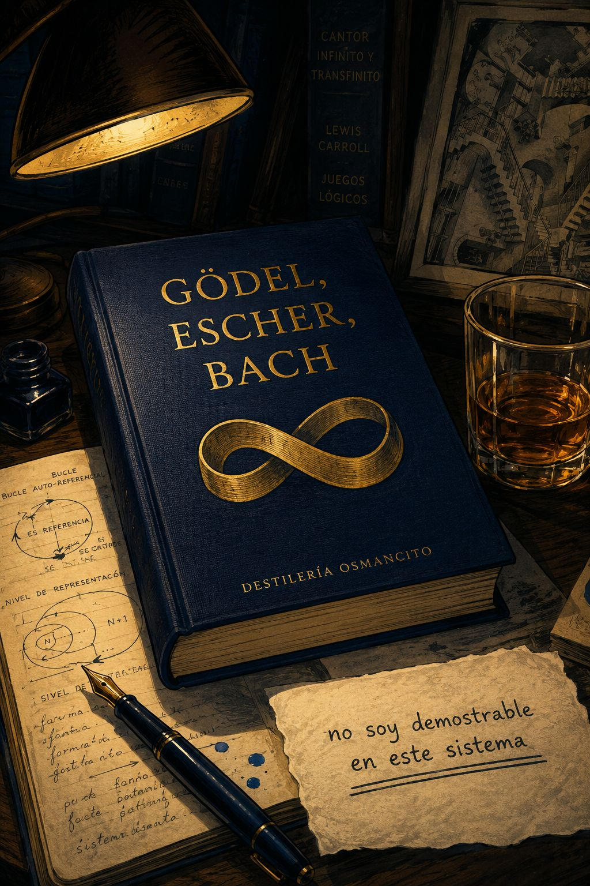
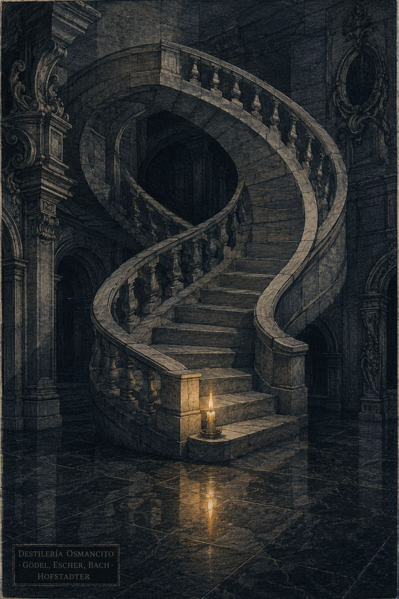
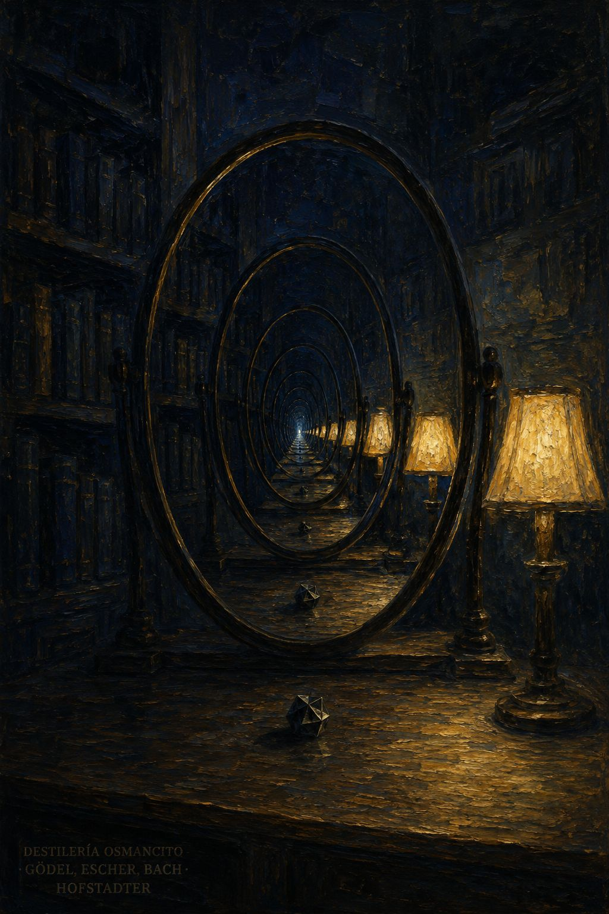
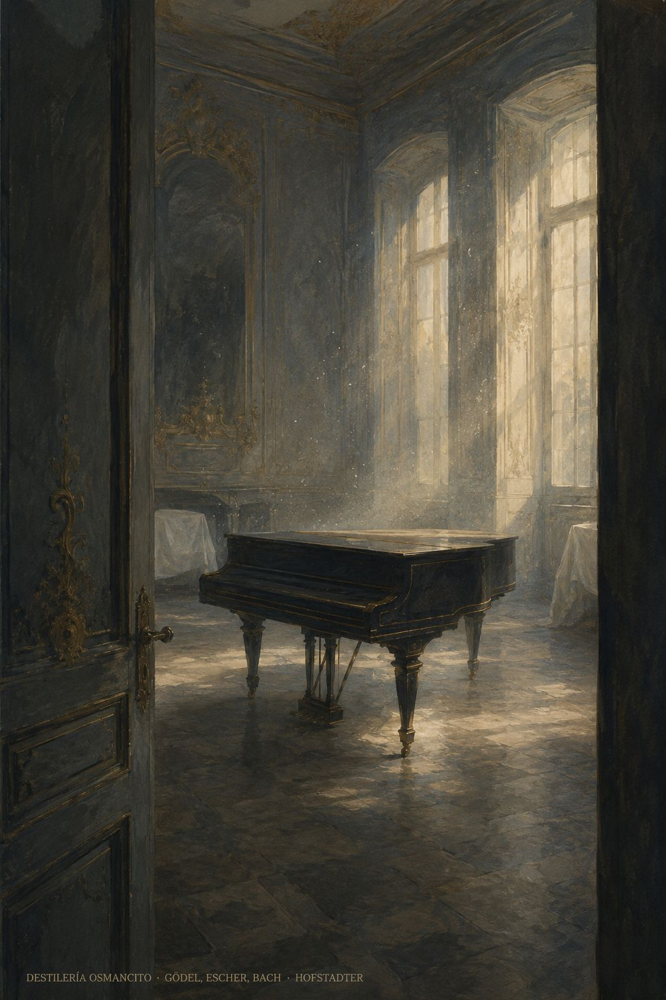

Frase de recepción del objeto
Un ladrillo azul oscuro que pesa más de lo que el lomo promete, encuadernado en algo que no es exactamente tela sino la superficie de una idea que lleva tiempo esperando que alguien la sostenga con ambas manos.
Eterno y grácil bucle

No soy demostrable

Tumbolia

Llega como un sistema que se describe a sí mismo mientras se construye. Pesa antes de abrirse. Dentro hay dos libros que fingen ser uno: el que demuestra y el que juega. Ambos dicen lo mismo. Ninguno lo dice igual.
Título — Gödel, Escher, Bach: un eterno y grácil bucle Autor — Douglas R. Hofstadter Año — 1979 (original); traducción española: 1987 Género — Ensayo filosófico-matemático con diálogos dramáticos intercalados Extensión estimada — 180.000–200.000 palabras Idioma original — Inglés Palabra más frecuente con contenido — sistema. El corpus declara hablar de conciencia, autorreferencia y bucles extraños. Que la palabra más presente sea sistema lo confirma y lo expone: el libro trata la conciencia como si fuera un sistema antes de haber demostrado que lo es. La elección léxica precede al argumento. Ratio — aproximadamente 320×
Un matemático norteamericano usa tres figuras del siglo XX —un compositor barroco, un grabador holandés, un lógico austríaco— como prisma para argumentar que la conciencia emerge de bucles autorreferenciales suficientemente complejos. El libro se mueve en dos registros simultáneos: capítulos de exposición técnica y diálogos dramáticos donde los mismos argumentos se representan en lugar de explicarse. La demostración central es la de Gödel: todo sistema formal suficientemente potente contiene verdades que no puede demostrar desde adentro. El libro aplica esa lógica, sin declararlo explícitamente, a sí mismo.
Johann Sebastian Bach — compositor. Su Ofrenda Musical y el Arte de la Fuga son el material sonoro del libro. M. C. Escher — grabador. Sus imposibles visuales funcionan como demostración gráfica de la autorreferencia. Kurt Gödel — matemático. Su teorema de incompletitud es el eje técnico del argumento. Aquiles y la Tortuga — personajes de los diálogos. Vienen de Zenón y de Lewis Carroll; aquí son los portadores del método. El Cangrejo — figura recurrente en los diálogos. Introduce las paradojas más densas, siempre de costado. El Autor — personaje del último diálogo. Hofstadter entra al libro como personaje sin anunciarlo como recurso.
El libro se abre con una carta histórica: Bach enviando su Ofrenda Musical al rey Federico el Grande, basada en un tema que el rey improvisó. Hofstadter usa ese gesto —un sistema respondiendo al material que otro sistema le dio— como imagen inaugural de todo lo que sigue.
Los primeros capítulos establecen el vocabulario: sistemas formales, reglas de producción, isomorfismos, jerarquías de tipos. El sistema MIU sirve como ejemplo introductorio: un sistema tan simple que sus límites son visibles sin esfuerzo.
Los diálogos corren en paralelo a los capítulos pero no los ilustran: los ejecutan. El Contracrostipunctus es un diálogo que es también un acróstico que es también un canon. La forma argumenta lo mismo que el contenido.
La demostración de Gödel ocupa el centro técnico del libro y requiere varios capítulos de preparación: la numeración de Gödel convierte fórmulas en números, lo que permite que el sistema hable de sus propias fórmulas. La afirmación godeliana —“no soy demostrable en este sistema”— es el clímax del argumento formal.
La segunda mitad aplica ese mecanismo a la mente: si el cerebro es un sistema formal, ¿puede conocerse a sí mismo completamente? La respuesta del libro es negativa y no del todo cómoda con esa negatividad.
El último diálogo introduce al Autor como personaje. Llega tarde, porta el manuscrito, dice sus líneas, y sin saberlo repite lo que sus personajes ya dijeron. El libro cierra sin resolver lo que abrió. Eso no es un defecto.
¿Puede un sistema conocerse a sí mismo sin que ese conocimiento lo altere o lo rompa? El libro demuestra que no, formalmente. Pero lo escribe de todas formas. Esa contradicción no se resuelve —se habita durante setecientas páginas.
La fidelidad perfecta es autodestructiva, y sin embargo algo en el sistema sigue buscándola. El fonógrafo que se destruye al reproducir su propio sonido destructor. El compositor que muere en el momento en que su nombre entra como voz en su propia fuga. La forma que no puede contenerse a sí misma sin fracturarse. El libro ama la precisión y sabe que la precisión tiene un límite que la precisión misma no puede trazar.
¿Desde dónde se habla cuando el tema de la conversación es el límite del habla? Hofstadter construye un sistema para demostrar que los sistemas no pueden saltar fuera de sí mismos, usando un sistema que no puede saltar fuera de sí mismo. Esta tensión no se nombra. Se practica. Es la única tensión del libro que el libro no puede ver.
GEB es un sistema que demuestra sus propios límites siendo incapaz de trascenderlos, y esa incapacidad no es su fracaso sino su forma más honesta de existir.
Lo que el análisis completo revela —visto desde la distancia que ninguna parte individual podía tener— es que el libro es una sola cosa vista desde muchos ángulos, y esa cosa no es un argumento sobre la conciencia ni una demostración matemática ni una celebración de Bach, Escher y Gödel. Es el registro de alguien que tuvo una experiencia de reconocimiento tan intensa y tan solitaria que construyó el sistema más elaborado que pudo para no estar solo con ella. Ese sistema demuestra, en su propio funcionamiento, que la experiencia no puede transmitirse completamente. Y esa demostración es el libro.
Esto no es una contradicción que el libro deba resolver. Es su arquitectura más profunda.
Visto desde M1: el primer contacto fue un espejo que al inclinarse revela otro espejo. Visto desde M2: un sistema que modula sin resolver, que se duplica sin repetir, que desciende para encontrar otro arriba. Visto desde M5: cada sección es un instrumento de una orquesta donde ninguno lleva la melodía todo el tiempo. Visto desde M6: falla exactamente donde promete, y esa falla es su mayor logro. Visto desde M7: construido por alguien que sabe en algún nivel que la elaboración no garantiza la supervivencia. Visto desde M14: un libro que solo podía escribirse en ese momento histórico, con ese optimismo epistémico, desde esa posición de extramuro disciplinar. Visto desde M17: un observador que se quiebra sistemáticamente ante la evidencia de que las cosas bien construidas no sobreviven intactas. Visto desde M19: la proposición godeliana del corpus es que no puede demostrar que produce en el lector lo que promete producir.
Todos estos ángulos dicen lo mismo en materiales distintos. El análisis completo es un canon: cada instrumento entra con el mismo tema desplazado en el tiempo, y juntos producen algo que ninguno podía producir solo. El análisis se volvió isomórfico con su objeto. Eso no estaba planeado. Ocurrió porque el corpus lo exigía.
Lo que sale con el lector —lo que carga al cerrar no el libro sino el análisis— es una disposición específica: la de buscar siempre el segundo nivel cuando el primero parece completo. Y la sospecha, más incómoda, de que el segundo nivel también tiene un segundo nivel, y que esa regresión no termina pero tampoco es vana. Que vale la pena seguir mirando aunque el fondo no aparezca nunca.
Dónde vive la densidad real
En los bordes entre los sistemas: donde el argumento matemático toca el argumento filosófico sin fusionarse con él, donde los diálogos demuestran lo que los capítulos solo describen, donde la forma del libro hace lo que el contenido del libro dice que es posible hacer. Y en los fragmentos que el análisis no podía absorber completamente: la carta de Bolyai, la nota sobre los pianos de Silbermann, el adverbio “benévolamente”, el espacio en blanco al final del Arte de la Fuga. La densidad real del corpus no vive en sus argumentos sino en lo que sus argumentos no pueden contener.
Las zonas de alta y baja presión
Alta presión: los capítulos IX y XIV, donde la demostración técnica y la confesión filosófica convergen. El diálogo 21, donde el sistema captura al que lo construyó. El mecanismo B-A-C-H seguido a través del corpus completo. La proposición godeliana, que es el punto de máxima presión del sistema sobre sí mismo.
Baja presión: los capítulos XVII-XIX, donde el libro se expande lateralmente sin profundizar. Los momentos de humor más elaborado, que son también los momentos donde el argumento hace sus saltos más arriesgados y necesita anestesia local. El tratamiento de las objeciones al argumento central —rápido, resolutivo, insuficiente para la escala de lo que objetan.
Los ejes de tensión que atraviesan el corpus entero
La fe de que la forma puede llevar la experiencia — contra la demostración de que ningún sistema puede contenerse completamente a sí mismo.
La soledad del hallazgo — contra el deseo de no estar solo con él.
El optimismo epistémico de 1979 — contra la incompletitud que el propio libro demuestra como condición estructural de todo sistema suficientemente poderoso.
La posición del observador que cree poder ver el sistema — contra la evidencia de que el observador es también un sistema que no puede verse completamente a sí mismo.
El territorio que el corpus bordea sin cruzar
La posibilidad de que construir bien no sea suficiente. El tiempo que pasa mientras se vive, no el tiempo abstracto de los sistemas. El fracaso como experiencia, no como límite formal. La pregunta de quién habla cuando el que habla ha demostrado que no puede hablar sobre sus propios límites. La duda del autor sobre el autor —no como recurso retórico sino como posibilidad real y desestabilizadora.
El análisis completo revela algo que ningún módulo individual podía ver desde adentro: que GEB y su análisis comparten la misma estructura de incompletitud.
El análisis producido en esta sesión —M1 a M17, más M19— es él mismo un sistema suficientemente complejo que se refiere a su propio objeto de maneras que el objeto describe. El análisis hizo con GEB exactamente lo que GEB hace con Bach, Escher y Gödel: tomó un objeto y lo iluminó desde múltiples ángulos simultáneos hasta que lo que emergió no era una descripción del objeto sino un nuevo objeto con el mismo contorno. El análisis es la cuarta sombra de lo que GEB llama “la esencia sólida central.” GEB era ya la cuarta sombra de lo que Bach, Escher y Gödel comparten.
Y este análisis —como GEB, como Bach, como Escher, como Gödel— no puede demostrar desde adentro que produce en quien lo lee lo que intentó producir.
La regresión no tiene fondo. Pero tampoco tiene fondo el pozo de la fuga que sube eternamente. Y Bach lo escribió de todas formas. Hofstadter lo analizó de todas formas. El análisis se hizo de todas formas.
Eso es suficiente. No como resignación. Como la única forma honesta de proceder cuando el fondo no aparece.
Un eterno y grácil bucle
Vista aérea nocturna de una ciudad circular cuyas calles forman, desde arriba, una espiral que se dobla sobre sí misma y regresa al centro. En el centro exacto: una sola ventana iluminada en un edificio oscuro. Desde esa ventana, si hubiera alguien mirando, vería la espiral completa. Pero la ventana es demasiado pequeña para contener esa vista. El observador no aparece. Solo la luz. Paleta: azul noche profundo, ámbar de las calles, blanco frío de la ventana única. Gouache sobre papel negro. Sin fotorrealismo. Relación de aspecto 2:3. En la esquina inferior: DESTILERÍA OSMANCITO · GÖDEL, ESCHER, BACH · HOFSTADTER.Lo que el corpus carga
Una figura humana de espaldas, de época indeterminada, sosteniendo con ambas manos un objeto que podría ser un libro o podría ser un espejo — desde el ángulo de la imagen es imposible distinguirlo. Si es un libro, lo está abriendo. Si es un espejo, está mirando algo que el espectador no puede ver. La figura está de pie en el umbral de una puerta, entre dos habitaciones igualmente oscuras. No avanza ni retrocede. La tensión es la del momento justo antes de decidir. Paleta: negro, gris azulado, un solo punto de luz blanca proveniente del objeto que sostiene. Tinta y aguada. Sin fotorrealismo. Relación de aspecto 2:3. En la esquina inferior: DESTILERÍA OSMANCITO · GÖDEL, ESCHER, BACH · HOFSTADTER.La partitura inconclusa
Una mesa de trabajo con una partitura manuscrita extendida. Las primeras páginas están densamente anotadas — notas, correcciones, líneas tachadas, márgenes llenos. Las páginas del centro tienen menos densidad. La última página visible tiene tres compases escritos y luego el pentagrama vacío hasta el borde del papel. Sobre el pentagrama vacío, muy levemente, como si hubiera sido escrito y luego borrado sin lograrlo completamente: una sola palabra ilegible. La pluma está apoyada sobre el papel, todavía con tinta en la punta, como si quien escribía acabara de levantarse y fuera a volver. Paleta: crema envejecido, sepia, negro, el azul muy oscuro de la tinta fresca. Acuarela con línea de tinta. Sin fotorrealismo. Relación de aspecto 2:3. En la esquina inferior: DESTILERÍA OSMANCITO · GÖDEL, ESCHER, BACH · HOFSTADTER.El sistema y su sombra
Dos manos extendidas sobre una superficie blanca, palmas arriba. En la palma izquierda: un sistema de engranajes en miniatura, perfectamente ensamblados, en funcionamiento. En la palma derecha: la sombra que ese sistema proyecta — pero la sombra tiene una forma distinta a la del sistema. No es la sombra que debería proyectar. Es la sombra de algo que el sistema no contiene pero que está, de alguna manera, dentro de él. Las manos no son del mismo tamaño. Luz lateral dura desde la izquierda. Paleta: blanco, negro, gris medio, el dorado oscuro del metal de los engranajes. Grabado en madera. Sin fotorrealismo. Relación de aspecto 2:3. En la esquina inferior: DESTILERÍA OSMANCITO · GÖDEL, ESCHER, BACH · HOFSTADTER.Sentí que alguien me estaba mostrando un espejo que, al inclinarlo levemente, revela otro espejo detrás, y detrás otro, y que la sensación no era de vértigo sino de algo extrañamente parecido al reconocimiento.
He releído. Aquí están las zonas donde algo latea, y la naturaleza de cada vitalidad.
1. La carta de Bach al rey Federico (intro.xhtml)
“mi humildísima obligación no podía ser otra que obedecer la orden de Vuestra Majestad… por falta de la necesaria preparación, mi ejecución no estaba a la altura”
Lo que late aquí no es humildad: es la energía de alguien que sabe exactamente cuánto vale lo que ofrece, y finge que no lo sabe. Una deferencia actuada con plena conciencia de su propia actuación. Hay algo casi físicamente tenso en esa prosa, como un arco que se dobla hacia atrás antes de soltar. La vitalidad es la del disimulo lúcido: la inteligencia doblada sobre sí misma para parecer pequeña.
2. El último Contrapunctus — Bach muere en medio de la fuga (dialogo04.xhtml)
“En el transcurso de esta fuga, y en el punto donde el nombre B.A.C.H. era empleado como contratema, el compositor murió.”
Esto no produce emoción. Produce algo anterior a la emoción: un corte. La vitalidad aquí es la del borde desnudo, la interrupción sin preparación ni resolución. El texto lo rodea, lo comenta, casi lo acolcha —y aun así el hecho permanece brutal, sin metabolizar. Una puerta que se cierra en medio de una frase.
3. La Tortuga le pregunta a Aquiles si nota algo raro en sus compañeros — “¡Que somos animales!” (dialogo21.xhtml)
“¿Cuánta gente conoce Ud. que gaste su tiempo en conversar con Tortugas parlantes y Cangrejos parlantes?”
Lo que late aquí no es el humor ni la paradoja: es el vértigo de que Aquiles haya tardado tanto en notarlo. La vitalidad es la del reconocimiento demorado, esa sensación de que algo obvio estuvo siempre ahí, esperando. Como cuando en un sueño de pronto alguien señala lo imposible del decorado y uno lo ve por primera vez habiendo caminado entre ello todo el tiempo.
4. El canon eternamente remontante — “que así como se levanta la modulación, así se levante la Gloria del Rey” (intro.xhtml)
Las palabras de Bach al margen de la partitura. Lo que late no es la dedicatoria al rey: es la idea de que Bach inscribió una instrucción que él sabía que nadie cumpliría jamás, porque la pieza no termina. Escribió para un lector imposible. La vitalidad es la del gesto hacia lo inaccesible, hecho de todas formas, con completa seriedad.
5. El padre de Bolyai le escribe a su hijo advirtiéndole que no estudie las paralelas (capitulo04.xhtml)
“He atravesado esa noche sin fondo, que consumió toda la luz y todo el goce de mi existencia. Te lo ruego, deja en paz la ciencia de las paralelas.”
Lo que late aquí no es la advertencia paterna: es el reconocimiento de que un problema puede devorar a alguien por entero sin devolver nada a cambio. La vitalidad es la del agotamiento fértil, esa energía peculiar de quien ha gastado toda su fuerza en algo que no cedió —y que sin embargo produjo algo, aunque no para él.
6. La secuencia Q (capitulo05.xhtml)
“La secuencia que resulta es, para decirlo benévolamente, errática.”
Un único adjetivo. “Para decirlo benévolamente.” En todo el libro técnico y exhaustivo, este instante de flojedad irónica frente a algo que no tiene explicación todavía. Lo que late aquí es la energía del límite del entendimiento del autor mismo, traicionado por su propia sintaxis. El libro se tropieza con algo que no puede domesticar, y lo dice casi de costado.
7. El Diseño G — “un amigo agnóstico llamó a éste ‘una imagen de Dios’” (capitulo05.xhtml)
Hofstadter anota esto sin comentario, sin ironía, sin distancia. Hay en esa frase citada sin elaboración una vitalidad que es la del asombro que no quiere ser explicado. El libro raramente se detiene. Aquí se detiene. La energía es la del silencio deliberado justo después de algo que no admite glosa.
8. “Yo no puedo comprenderme a mí mismo” — el maestro zen a Doko (capitulo09.xhtml)
Todo el capítulo construye hacia esto. Pero lo que late en esta frase no es el zen ni la paradoja: es que el libro entero podría terminar aquí, y sería honesto. La vitalidad es la de la confesión involuntaria, el momento en que el sistema construido por el autor para hablar de otros sistemas habla, sin proponérselo, del autor mismo.
9. El Autor entra portando el manuscrito (dialogo21.xhtml)
“Me las puedo arreglar perfectamente sin tal programa. Vea, una vez que mis personajes adquieren forma, parecen contar con vida propia.”
El Autor dice la misma frase que todos los demás dijeron antes —“Me las puedo arreglar perfectamente sin tal programa”— sin saberlo, repitiendo sin saberlo lo que él mismo puso en boca de los otros. Lo que late aquí no es el bucle: es que el libro ha atrapado al que lo escribió dentro de sus propias reglas. La vitalidad es la del autor capturado por su propia obra, que es acaso el único lugar donde la autorreferencia deja de ser técnica y se vuelve algo que duele levemente.
El texto respira en escalas.
No avanza. No argumenta en línea recta. Se modula. Establece una tonalidad, la sostiene el tiempo suficiente para que el lector la tome como hogar, y entonces —sin aviso brusco pero tampoco suave— desliza medio tono hacia arriba o hacia abajo. El lector llega a una resolución y siente alivio. Luego descubre que esa resolución era en realidad el comienzo de otra frase más larga que todavía no ha terminado. Esto ocurre en todos los niveles simultáneamente: dentro de un párrafo, dentro de un capítulo, dentro del libro entero.
Es música que no resuelve en la tónica. Siempre hay una escala más arriba.
El segundo movimiento es la duplicación con desplazamiento. El texto toma algo —una idea, una figura, una frase entera— y la repite en otro material. No la misma cosa: el mismo contorno en otra sustancia. Bach aparece, luego Escher, luego Gödel: tres veces el mismo surco trazado en piedra, en plomo, en aire. Los diálogos repiten los capítulos pero invertidos, oblicuos, disfrazados. Aquiles dice lo mismo que dijo la Tortuga pero no lo sabe. El Autor dice lo que dijeron sus personajes sin reconocerlo. El texto se copia a sí mismo hacia afuera, hacia adentro, de adelante para atrás.
No es eco. El eco devuelve el sonido atenuado. Aquí cada copia agrega algo que no estaba: un giro, una velocidad distinta, un intervalo de silencio. Es aumentación y disminución al mismo tiempo, según desde dónde se mire.
El tercer movimiento es el descenso que parece ascenso.
Cuando el texto se vuelve más técnico —las fórmulas, los números Gödel, las derivaciones del sistema MIU— el lector siente que está bajando, que pierde altitud conceptual, que el suelo está más cerca. Pero lo que ocurre es lo contrario: está siendo llevado al interior de la maquinaria, al nivel donde las reglas viven antes de hacerse ideas. El texto desciende para mostrar el fondo, y el fondo resulta ser otro cielo. Esto no se explica. Se hace.
El cuarto movimiento es la demora calculada.
Hay algo que el texto sabe desde la primera página y que el lector no sabrá hasta casi el final. No lo oculta activamente —no hay secreto guardado con malicia. Simplemente lo rodea. Habla alrededor. Llega siempre casi. La construcción de Gödel aparece prometida en la introducción, explicada parcialmente en el capítulo cuatro, recomenzada en el nueve, ejecutada en el catorce, y luego el libro continúa más allá de ella como si hubiera sido solo un pretexto. La demora no frustra: acumula peso. Cuando algo finalmente es dicho de frente, ya lleva encima todo el rodeo. Habla con la voz de lo que se ha tardado en decir.
El quinto movimiento —el más difícil de nombrar— es que el texto recuerda más de lo que enseña.
No en el sentido de que el lector recuerde haberlo leído antes. Sino en el sentido de que la lectura produce la sensación de estar recordando algo que no se sabía que se sabía. El bucle extraño, la autorreferencia, el sistema que no puede saltar fuera de sí mismo: estas cosas producen en el lector no el asombro de lo nuevo sino el reconocimiento extraño de lo que siempre estuvo ahí sin nombre. El texto opera como un instrumento que pone en vibración algo que ya existía en la caja de resonancia.
No informa. Hace sonar.
Así se mueve: modula sin resolver, se duplica sin repetir, desciende para encontrar otro arriba, demora para que el peso llegue junto con la palabra, y en cada vuelta produce ese reconocimiento lateral —no de algo aprendido sino de algo despertado.
Es un canon. No en sentido metafórico. En sentido técnico: cada voz entra diciendo lo mismo que la anterior, pero desplazada en el tiempo y en el tono, de modo que nunca suenan exactamente igual aunque sean exactamente lo mismo. Y el bucle cierra. El libro termina donde empezó: con Bach, con el rey, con la ofrenda, con el tema que el rey inventó y que Bach desarrolló hasta convertirlo en algo que ya no le pertenecía a ninguno de los dos.
1. La nota al pie de Forkel sobre los pianos de Silbermann
“Tengo noticias de que todos ellos continúan, ya inservibles, en distintos rincones del palacio real.”
Una frase entre paréntesis. Quince pianos perfectos, ahora inútiles, dispersos en habitaciones que nadie menciona. Su peso es el de la obsolescencia silenciosa: la prueba de que todo sistema suficientemente perfecto para su época se vuelve, exactamente por eso, incapaz de sobrevivir a ella. El libro entero habla de sistemas formales y sus límites. Esta nota lo dice en madera y cuerdas rotas.
2. El signo de puntuación 611
En las fórmulas de numeración Gödel, el número 611 separa líneas dentro de las derivaciones. No significa nada matemáticamente. Es solo un separador. Su peso es el de la convención que funda la posibilidad de todo lo que sigue: sin ese número arbitrario haciendo de coma, el argumento central del libro no puede construirse. Es el suelo que nadie pisa conscientemente porque está demasiado abajo.
3. La fecha: 7 de julio de 1747
Bach firma la carta al rey. Solo esa fecha. Su peso es el de la coordenada exacta: en un libro sobre bucles, recursividad y sistemas que se refieren a sí mismos, la única cosa completamente fija, sin doble sentido, sin niveles, sin autorreferencia posible, es ese día. Actúa como ancla. Como el único punto del texto que no puede doblarse sobre sí mismo.
4. La palabra “benévolamente” en la descripción de la secuencia Q
Un adverbio. Aparece una sola vez. Su peso es el de la grieta en la voz: en trescientas páginas de exposición técnica con aplomo y precisión, este adverbio es el único lugar donde el autor admite que algo lo supera sin saber bien cómo decirlo. Pesa como pesa la vacilación en alguien que rara vez vacila.
5. El hecho de que Fibonacci y Mumon vivieron al mismo tiempo
“Mumon vivió entre 1183 y 1260, en China; Fibonacci entre 1180 y 1250, en Italia.”
Dos frases. No se vuelve a mencionar. No hay argumento. Su peso es el de la coincidencia sin consecuencias declaradas: el lector queda sosteniendo algo que el texto no recoge. Dos sistemas —el numérico y el de la iluminación— generados en la misma franja de tiempo en extremos opuestos del mundo, sin que el libro diga por qué importa. Importa. No dice por qué. Ese silencio pesa como pregunta que el texto hace y no responde porque confía en que el lector la escuche.
6. El cinturón de seguridad que la Tortuga dice haber cerrado
“Sí, creo que he logrado cerrar este broche.”
Una línea. En la noria. Antes de que Buenafortuna los secuestre. Su peso es el de la precaución inútil: la Tortuga se asegura justo antes de que la seguridad deje de tener sentido. Pesa como pesa lo cotidiano atrapado en lo imposible, sin saberlo.
7. El espacio en blanco al final del Arte de la Fuga
El libro reproduce la última página del manuscrito de Bach. Después de la nota de Carl Philipp Emanuel —“el compositor murió”— la partitura se interrumpe. El texto de Hofstadter no comenta ese espacio. Lo muestra. Su peso es el de la evidencia sin glosa: la única imagen en el libro que no necesita que el libro hable de ella. Funciona exactamente al revés que todo lo demás.
8. La simetría de los parlamentos en el Canon Cangrejo que Aquiles tarda en notar
Aquiles admite que lo recuerda “vagamente”. No lo notó cuando ocurrió. Su peso es el de la experiencia que solo se entiende cuando alguien la trascribe: la sugerencia de que ciertas formas solo son visibles desde fuera de ellas, nunca desde adentro. Pesa como pesa la ceguera específica que viene de estar dentro de algo.
9. La ausencia del pianista en el Ricercar a seis voces
“Esperaba que un pianista amigo mío apareciera y tocara el continuo.”
El continuo —la voz que sostiene todo desde abajo— no llega. La música comienza sin él. El libro termina sin que esa voz de apoyo se complete. Su peso es el de la base que falta: el libro sobre sistemas que se sostienen a sí mismos termina con una voz faltante, sin anunciarlo como paradoja, sin subrayarlo. Solo falta. Eso es todo.
El texto carga con una soledad muy específica.
No la soledad del aislamiento. La soledad de quien ha encontrado exactamente lo que buscaba y no puede compartirlo del todo porque lo que encontró es, precisamente, que los sistemas no pueden saltar fuera de sí mismos. El libro es un intento extraordinariamente elaborado de llevar a alguien adentro de una experiencia. Pero la experiencia de que estás adentro y no puedes salir no puede ser transmitida desde adentro. Hofstadter lo sabe. Lo dice de veinte maneras distintas. Y sin embargo sigue intentándolo. El libro entero es ese intento que sabe que es imposible y que se hace de todas formas.
El texto no sabe que extraña algo que existió antes de los sistemas formales.
Hay en él una nostalgia que nunca se vuelve hacia sí misma. El rey Federico y Bach en Sanssouci, la conversación real antes del argumento, el músico en su traje de viaje sin tiempo de cambiarse: esas escenas tienen una cualidad de presencia que los capítulos técnicos no tienen. No porque sean más simples. Porque en ellas dos personas están en la misma habitación sin que ninguna de las dos sea un sistema. El libro trabaja hacia la demostración de que todo es, en algún sentido, formal. Pero guarda, sin nombrarlo, el recuerdo de cuando todavía no lo era.
Hay una pregunta que el texto formula constantemente con otros nombres y que en su forma directa nunca aparece: si el autor es también un sistema que no puede saltar fuera de sí mismo, ¿quién está escribiendo este libro?
No como paradoja lúdica. Como pregunta real sobre desde dónde se habla cuando se habla sobre los límites de hablar. El libro circunda esto. Se acerca. En el último diálogo el Autor entra, dice sus líneas, y el texto termina. Pero la pregunta no es respondida porque no puede serlo desde dentro del libro, y el libro no puede estar fuera del libro.
El texto lleva sin saberlo una relación particular con la muerte que no es la muerte de Bach.
Es más discreta. Es la muerte como caso especial del problema de la incompletitud: el sistema que no puede demostrar su propia coherencia, el fonógrafo que no puede reproducir su propio sonido destructor, el sujeto que no puede imaginar su propia no-existencia. Hofstadter lo menciona hacia el final, brevemente, como si fuera solo otro ejemplo. Pero no es otro ejemplo. Es el ejemplo del que los demás son derivaciones. El libro lo lleva desde el principio sin nombrarlo como lo que es.
Hay algo más, más pequeño y más difícil de señalar.
El texto carga con el peso de haber sido escrito por alguien muy joven que no lo sabía todavía. Hay una energía particular en los argumentos, una confianza en que si se construye bien el edificio la gente lo habitará, una fe en que la forma puede llevar la experiencia. Esa fe no es ingenua. Es la fe específica de quien acaba de descubrir algo verdadero y cree, todavía, que la verdad bien construida alcanza para lo que necesita alcanzar.
Lo que no sabe el texto es lo que viene después de descubrir algo verdadero.
Es un libro escrito por alguien que tuvo una experiencia que no cabe en un libro, y que construyó el libro más elaborado posible para ver si cabía. No cabe. Eso también está en el libro. Lo que tienes enfrente es un sistema que demuestra sus propios límites desde adentro, sin poder evitarlo, sin pretender que puede evitarlo, y que en ese intento imposible produce algo que no es exactamente conocimiento ni exactamente belleza sino una tercera cosa para la que no hay nombre todavía y que reconocerás cuando la encuentres porque ya la conocías antes de leer.
Una mirada que tolera no resolver. Que puede sostener una pregunta durante semanas sin que eso se sienta como fracaso.
Una mirada que ha construido algo —un argumento, un sistema, una pieza, un programa, una habitación— y en algún momento sintió que la construcción empezó a tener sus propias exigencias, distintas de las del constructor.
Una mirada que conoce la diferencia entre entender algo y que algo te haya ocurrido.
Una mirada musical. No necesariamente entrenada: que escuche en capas, que note cuándo una voz repite lo que dijo otra voz hace tres minutos en otro registro.
Una mirada que alguna vez se preguntó desde dónde se pregunta, y no encontró un lugar estable donde pararse para responder, y siguió de todas formas.
Una mirada que ha perdido algo —una certeza, una persona, una forma de ver el mundo— y que todavía no ha decidido si eso fue una pérdida o una apertura.
Una mirada técnica que no le tiene miedo a lo que no es técnico. O una mirada humanista que no le tiene miedo a lo técnico. El corpus parece indiferente a desde qué lado se entra, siempre que se entre de verdad.
Una mirada que puede leer lento. No por disciplina: porque algunas frases necesitan que uno se detenga y el texto recompensa esa detención con algo que no estaba visible en la velocidad.
Una mirada que alguna vez se preguntó si lo que llama “yo” es la misma cosa que lo que llama “yo” cinco minutos después, y encontró la pregunta más inquietante de lo esperado.
Y —aunque esto es más difícil de nombrar— una mirada que todavía tiene algo parecido a la fe de que entender bien algo cambia la forma en que se habita el mundo. No la certeza. Solo el rastro de esa fe, suficiente para seguir buscando.
Primer contacto
Antes de pensar en él: un libro que gira. No avanza —gira. Cada vez que uno cree haber llegado a algún lado, descubre que ese lado es el comienzo de otra vuelta. Produce una sensación que no es exactamente placer ni exactamente incomodidad sino algo parecido a lo que siente el oído cuando una pieza musical promete resolver y no resuelve todavía —una espera que se vuelve habitable, casi necesaria. Y debajo de esa sensación, más quieta, algo como reconocimiento: la impresión de que lo que el libro describe también le está pasando a uno mientras lo lee.
Mapa de profundidades
Vivo
La correspondencia entre Bach y Federico el Grande. Los diálogos de Aquiles y la Tortuga —especialmente el Contracrostipunctus y el Ricercar a seis voces. La interrupción del Arte de la Fuga. Los grabados de Escher funcionando como demostración, no como ilustración. El humor: seco, técnico, completamente en serio consigo mismo.
Sepultado
La demostración de Gödel en sentido estricto —está en el libro pero cubierta por capas de preparación, analogía y rodeo que la hacen accesible pero también la diluyen. Para encontrarla entera hay que destilar hacia el capítulo XIV y leerlo dos veces con lo anterior activo. También sepultado: el argumento sobre la conciencia, que no aparece nunca como tesis central pero es lo que todo lo demás está construyendo hacia.
Cerrado
La soledad del autor. No declarada, no tematizada —pero presente en la arquitectura del libro: en el hecho de que construye un sistema elaboradísimo para comunicar una experiencia que ese mismo sistema demuestra que no puede ser comunicada del todo. El libro sabe esto. No lo dice como confesión. Lo practica como forma.
También cerrado: una relación no resuelta con la muerte —no como tema filosófico sino como caso límite del problema central. Aparece brevemente al final, casi de pasada, pero lleva el peso de haber estado presente desde el principio sin nombre.
Esto es una propuesta, no una certeza.
Ausente
El cuerpo. El tiempo no abstracto —el tiempo que transcurre mientras uno vive, no el tiempo matemático. Las relaciones entre personas que no son relaciones entre sistemas. El fracaso —el libro conoce los límites pero no conoce el colapso. La duda del autor sobre el proyecto mismo: hay fe sostenida en que la forma puede llevar la experiencia, y esa fe nunca se interroga desde adentro.
Menú emergente
Extracción del núcleo duro — aislar la demostración de Gödel despojada de su aparato pedagógico. Qué dice exactamente, en el mínimo de palabras que no la traicionen. Útil para quien necesita el argumento sin el edificio.
Lectura del segundo idioma — el corpus tiene un idioma visible (sistemas formales, autorreferencia, jerarquías) y un idioma que opera sin nombrarse (la soledad del constructor, la nostalgia de lo pre-formal, la pregunta sobre quién habla cuando se habla sobre los límites del habla). Entrar a ese segundo idioma y leerlo como texto independiente.
Cartografía de ausencias — trabajar lo que el corpus no contiene como información positiva sobre lo que es. Qué tipo de libro resulta de estas ausencias específicas. Qué queda fuera y qué hace ese afuera.
Lectura de los diálogos como sistema separado — los diálogos funcionan independientemente de los capítulos. Tienen su propia lógica, su propia progresión, su propio argumento. Leerlos como obra dentro de la obra y ver qué dicen cuando se los lee así.
Seguimiento de una sola línea — tomar un elemento concreto (la melodía B-A-C-H, el número 611, la figura del Cangrejo, la palabra “benévolamente”) y seguirlo a través del corpus completo. Ver qué acumula. Ver dónde aparece y dónde debería aparecer y no aparece.
Lectura de lo que el texto carga sin saber — desarrollar con más profundidad y granularidad lo que el corpus lleva sin nombrarlo. Requiere lectura oblicua sostenida. El resultado es una propuesta, no una decodificación.
Existe un sistema formal suficientemente poderoso para hablar de aritmética. Dentro de ese sistema es posible construir una afirmación que dice, de sí misma, “no soy demostrable dentro de este sistema.”
Esa afirmación no puede ser falsa —si lo fuera, sería demostrable, y un sistema que demuestra falsedades es inconsistente. Tampoco puede ser demostrada —si lo fuera, sería falsa, y de nuevo: inconsistencia. Entonces es verdadera e indemostrable. El sistema es incompleto: hay verdades que no puede alcanzar desde adentro.
Esto no es un defecto reparable. Cualquier extensión del sistema suficientemente poderosa para tapar ese agujero produce uno nuevo. La incompletitud no es un accidente de diseño: es una propiedad de todo sistema formal que supere cierto umbral de complejidad.
El mecanismo que lo hace posible es uno solo: que el sistema puede hablar de sí mismo. Que sus propias fórmulas pueden ser codificadas como números, y que los números son exactamente lo que el sistema manipula. La autorreferencia no es decorativa —es la condición de posibilidad del argumento entero.
Lo que Gödel demostró no es que las matemáticas son débiles. Es que todo sistema suficientemente rico para ser interesante contiene verdades que ese sistema no puede probar. Y que ningún sistema puede demostrar su propia consistencia desde adentro sin ya haberla asumido.
Eso es todo. El resto del libro es el andamiaje para llegar aquí y las consecuencias de haber llegado.
El primer idioma del corpus habla de sistemas, jerarquías, autorreferencia, incompletitud, bucles. Es el idioma que el libro sabe que está hablando.
El segundo idioma habla de otra cosa.
Habla de la distancia entre descubrir algo y poder darlo. De la asimetría entre quien ha tenido una experiencia y quien todavía no la ha tenido, y del hecho de que no existe puente directo entre ambos —solo aproximaciones, rodeos, andamiajes que se retiran esperando que el otro haya cruzado. El libro entero es ese andamiaje. El segundo idioma es la conciencia de que el andamiaje puede no bastar.
Habla también de un momento anterior. Antes del rey y el músico en la sala: antes de que Bach supiera que iba a encontrarse con Federico, antes de que la Ofrenda Musical existiera como objeto, hubo una improvisación sobre un tema dado por otro. Ese momento —el músico respondiendo en tiempo real a algo que no eligió, sin red— es el que el libro trata de reproducir en el lector. No la obra terminada. El instante de la fuga que todavía no sabe adónde va.
Habla de la fidelidad. No como virtud moral: como problema técnico. El fonógrafo perfecto que se destruye al intentar reproducir su propio sonido destructor no es solo una analogía de Gödel. Es una imagen de cualquier sistema que intente ser completamente fiel a algo —incluyendo a sí mismo. El segundo idioma dice que la fidelidad perfecta es autodestructiva, y que sin embargo algo en nosotros la sigue buscando.
Habla, muy quietamente, de la vejez de las ideas. Los pianos de Silbermann inservibles en rincones del palacio. El sistema MIU que servía como ejemplo y que nadie usa para hacer matemáticas reales. Los kōans que circulan hace ochocientos años sin que nadie sepa si alguna vez funcionaron. El segundo idioma nota que las herramientas perfectas para su momento se vuelven reliquias, y que eso no las invalida sino que las vuelve otra cosa: evidencia de que hubo un momento en que alguien creyó que podían bastar.
Y habla, más abajo todavía, de la pregunta que el primer idioma no puede formular sin destruirse: si todo sistema suficientemente complejo es incompleto, y si el autor es también un sistema, entonces el libro sobre la incompletitud es él mismo incompleto de una manera que el libro no puede ver. El segundo idioma no resuelve esto. Solo lo sostiene, callado, debajo de todo lo demás.
El cuerpo.
El corpus no tiene cuerpo. Los personajes no pesan, no sienten frío, no se cansan de verdad. Aquiles corre pero nunca suda. La Tortuga carga su caparazón pero no lo sentimos. Esto no es un defecto: es una elección. El libro opera en el nivel de los símbolos, no de la materia. Pero esa elección tiene consecuencias: las preguntas sobre conciencia, identidad y muerte —que el libro formula con gran precisión— flotan sin anclaje físico. Lo que queda afuera es el peso específico de existir en un cuerpo que envejece. El libro sabe que existe ese peso. No lo conoce desde adentro.
El tiempo no abstracto.
El corpus conoce el tiempo matemático —secuencias, iteraciones, recursividad, el tiempo de una fuga que avanza hacia su resolución. No conoce el tiempo que transcurre mientras uno espera que alguien regrese, o mientras una enfermedad avanza, o mientras algo que amaba se vuelve irreconocible. La nostalgia que el libro carga —y carga, sin nombrarlo— no tiene objeto concreto porque el tiempo concreto no está en el libro. Lo que queda afuera es la duración vivida, que es distinta de la duración calculada.
El fracaso del proyecto.
El libro conoce los límites —los demuestra con rigor. Pero no conoce el colapso. No hay en él un momento donde el argumento se rinda, donde el autor admita que el edificio no se sostiene, donde la forma traicione lo que intenta llevar. La fe en que construir bien es suficiente se mantiene intacta de principio a fin. Lo que queda afuera es la posibilidad de que el proyecto falle no por sus límites internos sino por algo exterior a él: que el lector no cruce, que la experiencia no se transmita, que el andamiaje se retire y no haya nadie del otro lado.
Las relaciones sin mediación sistémica.
Todos los vínculos del corpus están mediados por ideas: Aquiles y la Tortuga hablan de paradojas, el Cangrejo habla de fonógrafos, el Autor habla del libro. No hay en el corpus dos entidades simplemente presentes la una para la otra sin que una idea ocupe el centro. Lo que queda afuera es el contacto directo —lo que ocurre entre personas cuando no están discutiendo nada, cuando están simplemente en la misma habitación. El corpus sabe que eso existe. No puede habitarlo.
La duda del autor sobre el autor.
Hay en el libro una confianza sostenida en que quien escribe puede ver lo que describe. Que la posición del observador es estable. Que el sistema que analiza sistemas puede hacerlo sin ser él mismo alterado por el análisis. Lo que queda afuera es la pregunta de si Hofstadter, al terminar el libro, era la misma persona que lo comenzó —y si no lo era, quién firmó qué.
Estas ausencias juntas dibujan un libro escrito desde un lugar muy específico: la inteligencia joven y completamente convocada, antes de que la vida haya introducido lo que la inteligencia no puede sistematizar. No es una crítica. Es la forma del libro. Un libro escrito diez años después habría sido otro libro.
Leídos solos, sin los capítulos, los diálogos cuentan una historia diferente.
Un guerrero griego y una tortuga se encuentran repetidamente en situaciones imposibles —lógicas, matemáticas, físicas, narrativas— y cada vez que parece que uno de ellos va a ganar, el terreno se desplaza. No hay vencedor. No hay resolución acumulada. Lo que acumula es otra cosa: la familiaridad con el desplazamiento mismo. Al final del último diálogo, Aquiles ya no se sorprende de estar dentro de un libro. Lo acepta. Esa es la única transformación que los diálogos registran: no comprensión creciente sino hospitalidad creciente hacia lo incomprensible.
La progresión tiene su propia arquitectura. Los primeros diálogos son juguetones —la paradoja de Zenón, el argumento de Carroll, la sonata para una sola voz. Los del medio se vuelven más densos: el fonógrafo que se destruye, el laberinto armónico, la numeración Gödel disfrazada de griales y acrósticos. Los últimos son otra cosa: el Autor entra, los personajes lo saben, y sin embargo el diálogo continúa como si pudiera continuar. Esa continuación —seguir hablando después de que el truco ha sido revelado— es lo que los diálogos dicen cuando se los lee solos.
También hay una voz que los capítulos no tienen: la de la interrupción. Los diálogos se cortan. La Tortuga hace una pregunta y el texto pasa a otra escena. El Autor llega tarde y la música ya empezó. El Cangrejo espera al pianista que no viene. Los diálogos conocen la incompletitud de una manera más física que los capítulos —no como argumento sino como experiencia de lectura. Algo siempre queda sin terminar. No por descuido.
Y leídos solos, los diálogos tienen un personaje secundario que los capítulos casi no tienen: el Cangrejo. Aparece en los momentos más densos, dice algo lateralmente importante, y se va. Nunca es el centro. Pero cada vez que aparece algo se desplaza. Es el personaje que el libro necesita sin saber exactamente para qué —lo que en música sería una voz interior que no lleva la melodía pero sin la cual la armonía no funciona.
Aparece por primera vez como dato histórico: en la notación alemana, las notas si-bemol, la, do, si forman las letras del apellido de Bach. Un hecho curioso, mencionado de paso.
Aparece por segunda vez como tema musical: Bach lo usó como contratema en el último Contrapunctus del Arte de la Fuga. Está escondido dentro de la pieza. Hay que saber buscarlo para encontrarlo.
Aparece por tercera vez como el punto exacto donde Bach murió. La fuga se interrumpe en el momento en que su propio nombre entra como voz. El compositor muere dentro de su firma.
Aparece por cuarta vez como propiedad matemática: la melodía B-A-C-H, tocada al revés y invertida, es idéntica a sí misma. Palindrómica en dos dimensiones simultáneamente.
Aparece por quinta vez en el Grial G: grabado en el cristal, las notas musicales son también letras, son también el nombre, son también una melodía que la Tortuga comienza a tocar —y en la nota H, el grial se destruye. El fonógrafo del corpus anterior reaparece en cristal y música. Lo que no puede reproducirse sin destruirse es ahora el nombre propio del compositor.
Seguida así, B-A-C-H no es un motivo decorativo. Es el lugar donde el corpus prueba su argumento más íntimo con material concreto: que la autorreferencia suficientemente precisa —un sistema que contiene su propio nombre como elemento activo— produce destrucción o interrupción. Bach muere en su firma. El grial se rompe en la nota H. La firma no es inocente. Llevar el propio nombre dentro de la obra es un riesgo estructural.
Lo que esta línea dice, seguida completa, es que la identidad inscrita en el sistema es exactamente lo que el sistema no puede sostener sin fracturarse. El corpus lo demuestra cuatro veces en materiales distintos antes de nombrarlo como argumento.
Ya nombrado antes en otra forma. Aquí con más granularidad, y desde otro ángulo.
El corpus carga la suposición de que quien lee es como quien escribe. No en contenido —el libro es generoso, pedagógico, paciente. Sino en disposición: asume un lector que encuentra placer en la complejidad sostenida, que puede habitar la incertidumbre sin necesitar resolución, que tiene tiempo y quietud suficientes para que el andamiaje funcione. Carga esto sin saberlo porque no puede verse desde afuera de sí mismo. El lector que no tiene esa disposición —que necesita que algo resuelva, que lee en fragmentos, que llega al libro exhausto— no está previsto en la arquitectura. No como exclusión deliberada: como punto ciego.
Carga también la suposición de que los sistemas y las mentes son comparables sin resto. Que lo que vale para TNT vale, metafóricamente, para el cerebro, y que esa metáfora es suficientemente precisa para trabajar con ella. El corpus sabe que es metáfora —lo dice. Pero la usa con una confianza que sugiere que en algún lugar cree que no es solo metáfora. Esa creencia no está dicha. Está en la frecuencia con que el salto se hace, en la naturalidad con que se cruza de un dominio al otro.
Carga, muy abajo, algo que podría llamarse la soledad de haber llegado demasiado pronto. El libro fue escrito antes de que existieran las comunidades que ahora lo habitan —antes de que la inteligencia artificial, la ciencia cognitiva y la filosofía de la mente se volvieran conversaciones públicas amplias. Hofstadter construyó el edificio antes de que hubiera vecindario. Eso no está en el libro como queja ni como orgullo. Está como una cierta urgencia en la explicación, una densidad pedagógica que sugiere que quien escribe no está seguro de tener interlocutores suficientes y construye más de lo necesario por si acaso.
Y carga, sin nombrarlo nunca, el hecho de que el libro es también un acto de amor. No hacia una persona: hacia una forma de pensar, hacia la posibilidad de que el pensamiento riguroso y el asombro no sean incompatibles, hacia Bach y Escher y Gödel como prueba de que esa compatibilidad existió al menos tres veces. El libro no dice que los ama. Pero los trata con una atención que es indistinguible del amor, y esa atención es lo que hace que el libro tenga temperatura —que no sea frío a pesar de ser preciso, que no sea abstracto a pesar de ser técnico.
Eso es lo que carga. No lo resuelvo porque no es resoluble desde afuera del libro, y el libro no puede resolverlo desde adentro.
Núcleo
El libro no comienza: actúa. La historia de Bach y Federico no es preámbulo, es la primera ejecución del argumento central —un sistema respondiendo al material que otro sistema le dio, sin preparación, en tiempo real. Todo lo que sigue es variación de ese momento.
Hallazgos
Microscópico — “Tengo noticias de que todos ellos continúan, ya inservibles, en distintos rincones del palacio real.” La frase de Forkel, encajada en nota al pie, opera con una elipsis de consecuencias: los quince pianos perfectos de Silbermann, ahora inútiles y dispersos, sin que nadie los nombre como argumento ni los use como ejemplo. El libro habla de sistemas que alcanzan sus límites; esta nota es ese límite hecho madera y cuerdas abandonadas, sin que el texto lo señale.
Mesoscópico — “Mi humildísima obligación no podía ser otra que obedecer la orden de Vuestra Majestad. Sin embargo, no pude menos que observar que, por falta de la necesaria preparación, mi ejecución no estaba a la altura de tan excelente tema.” Bach escribe esto sabiendo exactamente cuánto vale lo que ofrece. La deferencia es actuada con plena lucidez de su propia actuación. En un libro sobre sistemas que se refieren a sí mismos, esta carta es el primer ejemplo: un sistema que sabe lo que dice mientras dice que no sabe.
Macroscópico — La introducción establece en su último párrafo que el libro nació como folleto y “se expandió como una esfera”. Hofstadter declara que Gödel, Escher y Bach no son el tema sino “sombras proyectadas en distintas direcciones por alguna esencia sólida central”, y que intentó reconstruir esa esencia. Este gesto —nombrar lo que el libro no puede contener, y ofrecer el libro como sustituto— es la estructura entera en miniatura.
Núcleo
Zenón inventa a Aquiles y la Tortuga para demostrar que el movimiento es imposible. Pero los personajes, una vez inventados, se niegan a comportarse como lo requiere la demostración. El diálogo establece desde el principio que los personajes tienen más vida que su propósito original.
Hallazgos
Mesoscópico — “Nosotros somos invenciones de Zenón (como luego verá Ud.) y la razón de que estemos aquí es para sostener una carrera.” La Tortuga explica su propio origen sin asombro, como quien acepta su condición dentro de una jerarquía que no puede cambiar pero sí observar.
Macroscópico — La brevedad del diálogo es estructural. Es un gesto de afinar el instrumento antes de tocar. El libro aprende aquí a hablar en dos registros simultáneamente.
Núcleo
El sistema MIU introduce la distinción entre operar dentro de un sistema y pensar sobre él. La diferencia entre ambos modos no es de inteligencia sino de posición: la máquina no puede saltar afuera; el humano lo hace sin notar que lo está haciendo. Este capítulo es el umbral técnico del argumento central.
Hallazgos
Microscópico — “¿Puede usted producir MU?” La pregunta que abre el capítulo está formulada en segunda persona, directamente al lector, antes de explicar las reglas. Es un gesto de confianza: confiar en que el lector jugará antes de entender. La sintaxis produce el movimiento que el capítulo describe.
Mesoscópico — “Basta con que un hombre empiece a sentir impaciencia para que empiece también a razonar acerca de lo que está haciendo, preguntándose por qué no funciona.” La impaciencia como herramienta cognitiva. La frustración dentro del sistema genera el salto fuera del sistema. El libro hace del malestar un método.
Macroscópico — El sistema MIU nunca se resuelve del todo. La respuesta —que MU no es producible porque los teoremas siempre contienen un número de íes que no es múltiplo de tres, y tres no puede dividirse así— aparece más tarde, casi de paso. El acertijo fue diseñado para no satisfacer. El libro aprende aquí a dejar preguntas abiertas más tiempo del que el lector juzgaría razonable.
Núcleo
Lewis Carroll demuestra que ningún argumento puede ser forzado a aceptarse por la sola acumulación de premisas. Para cada paso de razonamiento se puede exigir una regla que lo justifique; esa regla puede a su vez ser cuestionada; y así hasta el infinito. El diálogo importado de Carroll hace algo que el libro no podría hacer por sí mismo: demostrar la regresión infinita dejándola incompleta.
Hallazgos
Mesoscópico — “Ya veo —dijo Aquiles; y había un toque de tristeza en su tono de voz.” Un adjetivo. El único momento en todo el diálogo donde el narrador de Carroll registra emoción. La tristeza es exactamente la emoción correcta: el reconocimiento de que no hay salida, que el argumento seguirá para siempre, que la Tortuga tiene razón aunque sea imposible.
Macroscópico — El diálogo termina sin terminar. La Tortuga sigue dictando, Aquiles sigue escribiendo. El libro deja entrar una obra completa de otro autor, sin adaptarla, porque no podría mejorarla. Este gesto de hospitalidad intelectual es inusual en un libro tan construido.
Núcleo
El sistema mg demuestra que los símbolos sin significado adquieren significado en cuanto se descubre un isomorfismo entre sus teoremas y verdades del mundo. La significación no está en los símbolos ni en los intérpretes: está en la correspondencia entre ambos. Este capítulo es la base epistemológica de todo lo que sigue.
Hallazgos
Microscópico — “Llamaremos significativa a la segunda clase de interpretación.” El adjetivo aparece sin comillas. En un libro lleno de vocabulario técnico cuidadosamente marcado, este término se usa sin protección como si su sentido fuera evidente. El libro hace aquí lo que describe: asigna significación sin anunciarla.
Mesoscópico — “Un matemático se regocija cuando logra descubrir un isomorfismo entre dos estructuras previamente conocidas. Se trata a menudo de una ‘iluminación’, y se convierte en fuente de asombro.” La palabra “iluminación” aparece con comillas que la protegen pero no la cancelan. El libro toca el zen sin nombrarlo, dos capítulos antes de nombrarlo.
Núcleo
Solo se escucha un lado de una conversación telefónica. La Tortuga existe como ausencia activa: sus palabras se reconstruyen desde las respuestas de Aquiles. El diálogo demuestra que el fondo puede contener tanta información como la figura.
Hallazgos
Macroscópico — La forma de este diálogo es su argumento. No se podría reescribir en forma convencional sin destruir lo que demuestra. Es el único momento del libro donde la forma es tan irrenunciable que cualquier traducción a prosa la eliminaría.
Núcleo
La distinción entre figura y fondo en arte se traslada a la distinción entre teoremas y no-teoremas en sistemas formales. El capítulo pregunta si el complemento de un conjunto positivamente definido tiene por sí mismo una forma. La respuesta —que los no-teoremas no tienen “forma” positiva sino solo una definición negativa— prepara el terreno para la incompletitud.
Hallazgos
Mesoscópico — La lista de teoremas del tipo C con “huecos” numerados es el primer momento donde el libro muestra un conjunto como imagen visual. Los huecos en la lista —los números primos ausentes— son más elocuentes que los elementos presentes.
Núcleo
El diálogo más denso del libro antes del final. La Tortuga destruye fonógrafos con discos diseñados para sus frecuencias de resonancia. El Cangrejo inventa fonógrafos que pueden reconfigurarse. Al final, Aquiles regala a la Tortuga el grial de cristal de Bach, que contiene grabadas las notas B-A-C-H. El libro practica la autorreferencia antes de explicarla.
Hallazgos
Microscópico — El título “Contracrostipunctus” cruza “acróstico” y “contrapunctus”. Nadie lo explicará hasta el siguiente capítulo. El título funciona como cifrado: legible, sin significado accesible todavía, a la espera de que el lector regrese.
Mesoscópico — “Todo comenzó cuando mi amigo el Cangrejo —entre paréntesis, ¿le gustaría conocerlo?— me hizo una visita.” El Cangrejo se introduce de pasada, entre guiones, como si ya fuera conocido. El libro genera familiaridad antes de presentación. Los personajes parecen haber existido antes del libro.
Mesoscópico — “Tengo que decir que esta música no se trata precisamente de eso.” La Tortuga corrige a Aquiles con una elegancia que casi oculta que la corrección es el comienzo de todo el argumento. El libro coloca sus premisas más importantes en frases que parecen aclaraciones menores.
Macroscópico — El diálogo contiene un acróstico donde las iniciales de los parlamentos de la Tortuga forman una frase. El libro esconde dentro de sí una segunda lectura que solo existe si alguien busca activamente. La autorreferencia no se anuncia: se ejerce.
Núcleo
La historia de las geometrías no euclidianas demuestra que la “verdad” de un sistema formal depende de su interpretación, no de sus axiomas. La carta de Farkas Bolyai a su hijo advirtiendo que no estudie las paralelas introduce el único momento verdaderamente trágico del libro.
Hallazgos
Mesoscópico — “He atravesado esa noche sin fondo, que consumió toda la luz y todo el goce de mi existencia. Te lo ruego, deja en paz la ciencia de las paralelas.” Farkas Bolyai escribió esto a su hijo János, que no obedeció. El libro cita esto para ilustrar los fundamentos de la geometría. Pero el fragmento no cabe en ese uso: tiene demasiado peso propio. Es el único lugar del corpus donde una vida entera aparece destruida por un problema matemático y el libro no puede del todo absorberlo en su argumento.
Núcleo
Aquiles y la Tortuga, capturados por Buenafortuna, leen un cuento dentro del cual los personajes leen otro cuento, que contiene referencias a la situación exterior. La recursividad se practica antes de explicarse. El diálogo termina sin terminar: la amenaza de Buenafortuna nunca se resuelve, Aquiles y la Tortuga quedan en el cielo, suspendidos.
Hallazgos
Microscópico — “Sí, creo que he logrado cerrar este broche.” La Tortuga se asegura el cinturón de seguridad de la noria justo antes de ser capturada por Buenafortuna. La precaución inútil en el momento exacto donde la seguridad deja de aplicar. El libro coloca este detalle sin comentario.
Macroscópico — La metida sin sacada al final del diálogo —la amenaza que nunca se resuelve— es el argumento formal sobre pilas incompletas ejecutado en forma narrativa. El libro no resuelve la situación de sus propios personajes para demostrar que las pilas pueden quedar sin sacar.
Núcleo
La recursividad se define mediante ejemplos: ejecutivos con llamadas telefónicas apiladas, programas de radio en múltiples niveles, redes de transición que se llaman a sí mismas. La secuencia de Fibonacci aparece como propiedad matemática del árbol infinito del Diagrama D. La recursividad no es solo un mecanismo: es la forma en que las estructuras crecen hacia adentro.
Hallazgos
Mesoscópico — “Alrededor del año 1202 por Leonardo de Pisa, hijo de Bonaccio, llamado en consecuencia ‘Filius Bonacci’ o, abreviadamente, ‘Fibonacci’. Estos números son mejor definidos, recursivamente.” La secuencia de Fibonacci aparece como propiedad emergente de un diagrama que nadie construyó para contenerla. El libro demuestra la significación implícita antes de teorizarla.
Microscópico — La secuencia Q aparece brevemente con la descripción “para decirlo benévolamente, errática”. Un adverbio que es el único lugar donde Hofstadter admite, casi de costado, que algo en el corpus lo supera. El libro vacila exactamente donde la recursividad no tiene todavía explicación.
Núcleo
¿Está la significación en el mensaje o en quien lo recibe? El capítulo argumenta que hay mensajes con “lógica interior compulsiva” suficiente para restaurar su propio contexto ante cualquier inteligencia adecuada. El disco de Bach lanzado al espacio. El ADN sin célula que lo lea. El jeroglífico sin Champollion todavía.
Hallazgos
Mesoscópico — “La inteligencia es parte de un objeto, en la medida en que actúa sobre la inteligencia de un modo previsible.” Una definición que funciona también como descripción del libro. GEB actúa sobre la inteligencia de un modo previsible. La frase es autorreferencial sin proponérselo.
Núcleo
El zen se usa como analogía de la incompletitud: así como las palabras no pueden capturar la verdad completa, los sistemas formales no pueden demostrar todas las verdades que contienen. Mumon y Fibonacci vivieron casi exactamente al mismo tiempo. El capítulo más oblicuo es también el que más directamente habla de los límites del sistema desde adentro.
Hallazgos
Mesoscópico — “‘Yo no puedo comprenderme a mí mismo’, dijo el maestro.” La frase aparece al final del kōan de Doko, y el libro la comenta brevemente. Pero ya se ha dicho: el libro entero podría terminar aquí. La confesión del maestro zen es el segundo Teorema de Gödel en otra forma.
Macroscópico — Hofstadter abre el capítulo con: “No estoy muy seguro de saber qué es el zen.” Es la única vez en el libro donde el autor declara explícitamente que no comprende su propio material. El libro, que demuestra que todo sistema suficientemente poderoso contiene verdades que no puede probar, contiene aquí una verdad que el autor no puede demostrar.
Núcleo
La demostración de Gödel ejecutada en detalle. Los números Gödel convierten las proposiciones del sistema en objetos del sistema: el sistema puede hablar de sí mismo. La proposición godeliana —“no soy demostrable en este sistema”— es verdadera e indemostrable. El número 611 como separador de líneas es el único elemento completamente arbitrario del argumento central.
Hallazgos
Microscópico — “Dicho sea de paso, aquí es donde aparece el codón ‘611’; su finalidad es separar entre sí las sucesivas líneas de números Gödel. En este sentido, 611 sirve como signo de puntuación.” El número 611, completamente arbitrario, es el suelo sobre el que se construye el argumento central del libro. Sin una convención arbitraria, la autorreferencia no es posible. El libro hace de la arbitrariedad una condición de posibilidad.
Macroscópico — El capítulo es técnicamente el más exigente del libro. Lleva veinte capítulos de preparación. Y aun así termina con la sensación de que algo esencial ha quedado fuera del alcance de la demostración misma —que la verdad de la proposición godeliana se ve pero no se demuestra, que el sistema puede señalar su propio límite pero no cruzarlo.
Núcleo
Desenlace de la argumentación. Los sistemas suficientemente complejos se doblan sobre sí mismos; la distinción entre niveles se borra; emerge algo que parece libre albedrío porque no puede verse el hardware que lo produce. El cerebro como Jerarquía Enredada sustentada por neuronas inviolables. El yo como ilusión útil.
Hallazgos
Mesoscópico — “Yo diría que todos estamos en el mismo barco de aquel maestro Zen que, después de contradecirse varias veces consecutivas, dijo al confundido Doko: ‘Yo no puedo comprenderme a mí mismo’.” La frase del capítulo IX regresa aquí como remate del argumento central. El libro cierra un bucle que abrió once capítulos antes, sin anunciarlo.
Macroscópico — El capítulo habla de gobiernos, ciencia, pseudociencia, libre albedrío, neuronas. Se expande hacia todo lo que puede alcanzar. Es el capítulo con mayor variedad temática y también el que más claramente muestra las costuras del libro: la fe de que si se construye bien el argumento, alcanzará para todo.
Núcleo
El diálogo final reactualiza la historia de Bach y Federico: el Cangrejo reemplaza al rey, las computadoras reemplazan los pianos, Aquiles y la Tortuga ejecutan la Sonata-Trío. El Autor entra tarde, portando el manuscrito. Dice sus líneas —“Me las puedo arreglar perfectamente sin tal programa”— repitiendo sin saberlo lo que dijeron Aquiles, la Tortuga y el Cangrejo. El libro cierra sobre sí mismo.
Hallazgos
Microscópico — “Me las puedo arreglar perfectamente sin tal programa.” La frase aparece cuatro veces en el diálogo: Aquiles, la Tortuga, el Cangrejo, el Autor. Cada uno la dice en contexto diferente, creyendo que es suya, sin saber que los demás la han dicho. La frase es el canon: el mismo tema en cuatro voces sin que ninguna lo sepa.
Mesoscópico — “Esperaba que un pianista amigo mío apareciera y tocara el continuo. Durante mucho tiempo he deseado que Ud. lo conozca, Aquiles. Desafortunadamente parece que él no podrá venir.” El pianista que no llega. El continuo que no se completa. El libro termina con una voz faltante que nadie llora pero que falta.
Mesoscópico — “¡Que somos animales!” La Tortuga señala lo que Aquiles nunca notó: que ha estado conversando todo el tiempo con una Tortuga y un Cangrejo parlantes. El reconocimiento demorado de lo imposible del decorado, visible siempre, visto solo cuando alguien lo nombra.
Macroscópico — El Autor entra al libro como personaje y dice lo mismo que sus personajes dijeron sin saberlo. El sistema ha atrapado al que lo construyó dentro de sus propias reglas. No es una paradoja decorativa: es la única conclusión honesta de un libro sobre sistemas que no pueden saltar fuera de sí mismos.
Dónde vive la densidad real del corpus
En los bordes entre los diálogos y los capítulos: en el momento en que un diálogo acaba de demostrar algo que el capítulo aún no ha nombrado. Y en los fragmentos que el texto cita sin elaborar: la carta de Farkas Bolyai, la muerte de Bach en la fuga, el adverbio “benévolamente” ante la secuencia Q. La densidad mayor no está en los argumentos sino en lo que el argumento no puede absorber.
Dónde trabaja más
En la construcción de analogías entre dominios radicalmente distintos. El libro mantiene simultáneamente en el aire música, lógica matemática, biología molecular, inteligencia artificial, budismo zen y lingüística. El esfuerzo de no dejar caer ninguno de estos dominios es el trabajo constante del corpus.
Dónde respira o cede
En los diálogos más juguetones —el Canon Cangrejo, el Contrafactus, el Canon Perezoso. En las notas al pie donde Hofstadter se permite la ironía. En los momentos donde los personajes se divierten sin que la diversión tenga que demostrar nada. El libro es más ligero cuando confía en que el lector ha seguido el argumento y puede soltarse momentáneamente.
Las fuerzas que lo mantienen en movimiento
La fe de que la forma puede llevar la experiencia: que construir con suficiente cuidado un edificio produce en quien lo habita el mismo estado que produjo construirlo. Contra esto: la demostración que el libro mismo hace de que ningún sistema puede contenerse completamente a sí mismo. El libro avanza sostenido por una fe que su propio argumento pone en cuestión, sin que esto lo detenga.
Lo que el corpus bordea sin entrar
La pregunta de quién habla cuando el que habla ha demostrado que no puede hablar sobre sus propios límites. La posibilidad de que el proyecto haya fallado —que el andamiaje se haya retirado y no haya nadie del otro lado. El tiempo no abstracto: el tiempo que pasa mientras se vive, no el tiempo lógico de los sistemas. La duda del autor sobre el autor.
El corpus tiene el peso de un objeto que ha absorbido humedad: más pesado de lo que debería para su tamaño, con cierta resistencia al abrir. Su temperatura es la de algo que lleva tiempo en una habitación habitada: no frío, no caliente, tibio con la tibieza de lo que ha sido sostenido. No el calor de la urgencia sino el de la acumulación.
Su textura al leerlo es irregular de una manera específica: hay tramos de terciopelo técnico donde la mano desliza sin fricción, y luego momentos donde el tejido se aprieta —la carta de Bolyai, la nota al pie de los pianos de Silbermann, el espacio blanco al final del Arte de la Fuga— y el lector debe detenerse sin saber exactamente por qué.
Lo que deja es la sensación de haber estado dentro de algo muy elaborado que no terminó de cerrarse. No porque le falte algo: sino porque está construido de modo que no puede cerrarse, y lo sabe, y lo dice, y sigue de todas formas. Lo que permanece no es conocimiento sino una especie de disposición: la costumbre de buscar el segundo nivel cuando el primero parece completo.
Envejece bien. Leído en 1979 era una promesa sobre la inteligencia artificial y la mente. Leído ahora, cuando parte de esa promesa se ha cumplido de formas que el libro no previó y otras que previó con exactitud, el libro gana una dimensión que no tenía: la de ser él mismo un sistema que no puede ver sus propias verdades futuras. Se vuelve, con el tiempo, un ejemplo de lo que describe.
GEB es un libro que sabe exactamente lo que dice y con qué precisión lo dice. Esa lucidez declarada es la primera señal de que algo opera debajo de ella. Los corpus más controlados son los que más cargan sin saberlo —no por deshonestidad sino porque la energía que sostiene la construcción viene de algún lugar que el constructor no ha necesitado examinar. Lo más revelador de GEB no está en el argumento. Está en lo que el argumento necesitó para existir.
El fracaso como posibilidad real. GEB conoce sus límites con honestidad notable. Sabe que la demostración de Gödel no resuelve la pregunta sobre la conciencia, solo la reformula con más precisión. Sabe que los sistemas no pueden contenerse completamente a sí mismos. Lo que el corpus no contiene es la posibilidad de que el proyecto mismo haya fallado —no por sus límites formales sino por sus límites comunicativos. Que el andamiaje se haya retirado y no haya nadie del otro lado. Que la experiencia que intentó transmitir no haya cruzado. Esta posibilidad no aparece en el libro. El libro contempla el fracaso de los sistemas que describe pero no el fracaso del sistema que es.
El tiempo que pasa mientras se vive. GEB conoce el tiempo matemático —iteraciones, recursividad, la duración de una fuga. No conoce el tiempo que transcurre mientras una persona envejece, mientras algo que amó se vuelve irreconocible, mientras una certeza se erosiona no por argumentos sino por la acumulación de días. El libro habla de sistemas que cambian de estado, no de personas que cambian de naturaleza. Las ausencias de cuerpo, de duración vivida, de irreversibilidad personal, componen juntas un territorio que el corpus rodea perfectamente sin entrar.
La relación sin mediación intelectual. Todos los vínculos en GEB están mediados por ideas. Aquiles y la Tortuga discuten paradojas. El Cangrejo habla de fonógrafos. El Autor porta el manuscrito. No hay en el corpus dos entidades simplemente presentes la una para la otra sin que una idea ocupe el centro. Lo que está ausente es el contacto directo —lo que ocurre entre personas o entre una persona y un objeto cuando no están demostrando nada. Esta ausencia no es un defecto del libro: es una consecuencia necesaria de su proyecto. Pero produce un libro sin temperatura corporal, intelectualmente cálido y físicamente frío.
La duda del autor sobre el autor. GEB tiene una confianza sostenida en la posición del observador. El que construye el sistema puede ver el sistema. Esta confianza nunca se interroga desde adentro. No hay en el libro un momento donde Hofstadter considere seriamente que él mismo podría ser el punto ciego de su propio argumento —que el sistema que construyó para describir los límites de los sistemas podría estar describiendo sus propios límites sin saberlo. La proposición godeliana del libro, formulada desde afuera en M19, es invisible para el libro desde adentro. Esa invisibilidad es la ausencia más estructural del corpus.
La posibilidad de que la conciencia no sea un Bucle Extraño. El libro argumenta que la conciencia emerge de jerarquías enredadas suficientemente complejas. Lo hace con gran inteligencia y poder persuasivo. Lo que está completamente ausente es el tratamiento serio de la posibilidad contraria: que la conciencia tenga una naturaleza que los sistemas formales no pueden alcanzar no por incompletitud sino por categoría. El libro considera esa posibilidad como ingenuidad filosófica o como dualismo insostenible, y la descarta sin desarrollarla. Esa descarte es rápido para un libro que es lento en todo lo demás.
El humor que aparece donde el argumento cede. GEB es consistentemente ingenioso. Pero hay una distribución específica del humor que el libro no controla: las bromas más elaboradas, los juegos de palabras más densos, los momentos de mayor ligereza aparecen sistemáticamente en los lugares donde el argumento hace su salto más difícil de sostener. El Contracrostipunctus —el diálogo más cargado de juego verbal— es también el que lleva el salto más pesado: de los fonógrafos a la incompletitud de Gödel. La Furmiga —con su recursividad léxica de HOLISMO /REDUCCIONISMO /MU— aparece en el momento en que el libro necesita pasar del argumento matemático al argumento sobre la mente. El humor no es decorativo: es anestesia local. El corpus lo usa donde más duele, sin declararlo.
La aceleración antes de las conclusiones filosóficas. El libro tiene un tempo calculado y sostenido durante sus primeros quince capítulos. En los últimos cinco —donde las implicaciones sobre la conciencia, el libre albedrío y la IA se despliegan— el ritmo cambia de manera que el libro no reconoce: hay más afirmaciones por página, menos demostración por afirmación, más apelación a la intuición del lector. La densidad de “parece que”, “es posible que”, “uno podría imaginar” aumenta en los capítulos donde las apuestas son más altas. El corpus habla más rápido exactamente donde necesitaría hablar más lento. Esa aceleración es involuntaria —visible en la sintaxis, no en el argumento.
La palabra “sencillamente” en momentos no sencillos. El corpus usa con frecuencia inusual adverbios de simplificación —“sencillamente”, “simplemente”, “no es más que”— en el momento exacto en que introduce sus conceptos más complejos o sus saltos más arriesgados. “La conciencia no es más que un patrón suficientemente complejo.” “Sencillamente, el sistema se refiere a sí mismo.” Estos adverbios no son didácticos: son síntomáticos. Aparecen donde el corpus siente la resistencia del lector y la aplana antes de que se articule. El lector que nota el patrón siente que algo se está pasando por alto justo donde el libro dice que no hay nada que pasar por alto.
La referencia lateral a la muerte. GEB menciona la muerte de Bach —en la fuga, en su propia firma— con una densidad emocional que ningún otro evento del libro produce. Pero fuera de ese momento, la muerte aparece en el corpus solo como caso límite teórico: el problema de la identidad personal, la cuestión de si la conciencia persiste, la pregunta de qué significa que un sistema deje de operar. La muerte nunca aparece como experiencia —como algo que el autor o algún personaje haya atravesado o esté atravesando. Hay una evasión sistemática del tema que es especialmente notable en un libro que trata la conciencia como su objeto central. La conciencia sin mortalidad es un concepto incompleto. El corpus lo rodea sin nombrarlo.
El Cangrejo como válvula de escape. El Cangrejo aparece en los momentos más técnicamente densos del libro y dice algo que desplaza el peso sin resolverlo. En el Canon Cangrejo introduce la paradoja más comprimida. En el Magnificangrejo afirma que puede distinguir verdades de teoría de los números por su belleza musical —exactamente lo que el Teorema de Incompletitud hace imposible verificar. En el Ricercar actúa como anfitrión del final. El Cangrejo es el personaje que el libro usa cuando necesita que algo ocurra que el argumento no puede producir directamente. Su recurrencia en puntos de quiebre no es casualidad estructural: es un síntoma de dónde el corpus necesita ayuda que no puede pedirse a sí mismo.
El patrón de la llegada tardía. En GEB llegan tarde: Bach llega a Sanssouci sin tiempo de cambiarse el traje de viaje. El Autor llega al último diálogo cuando la música ya empezó. El pianista que debía tocar el continuo no llega. El rey Federico llega a la historia de GEB a través de la leyenda, no de la presencia. La llegada tardía —o la no-llegada— ocurre al menos seis veces en posiciones estructuralmente significativas. Lo que produce en el lector: la sensación de que algo importante siempre está ligeramente fuera de sintonía con el momento en que se lo necesita. Esto no está declarado como tema. Pero construye una atmósfera de desincronización que atraviesa el corpus: los sistemas siempre llegan cuando el contexto que los haría perfectamente legibles ya pasó, o todavía no ha llegado.
El patrón de la pregunta que se responde con otra pregunta. En los diálogos, cuando una pregunta alcanza el núcleo del argumento —cuando Aquiles pregunta algo que no tiene respuesta dentro del sistema— el interlocutor responde con una pregunta lateral, una anécdota, un cambio de tema o una observación sobre la naturaleza de las preguntas. Este patrón ocurre con regularidad que el corpus no reconoce. Lo que produce: la sensación de que el libro es infinitamente hospitalario con las preguntas pero selectivo con las respuestas. El lector que nota el patrón empieza a distinguir las preguntas que el libro puede responder de las que solo puede rodear —y esa distinción es más informativa que cualquier respuesta individual.
El patrón de la obra inconclusa como ejemplo central. El Arte de la Fuga termina incompleto. El sistema MIU no tiene procedimiento de decisión para MU. El laberinto armónico no saca todas sus pilas. El canon no resuelve en la tónica. La demostración de Gödel produce verdades indemostrables. En cada caso, el corpus usa una obra o un sistema inconcluso como ejemplo de algo —y en cada caso la incompletitud no es el punto explícito del ejemplo sino su condición de posibilidad. El corpus necesita objetos incompletos para demostrar sus argumentos, y los colecciona con una regularidad que excede lo metodológico. Lo que produce: la acumulación de inconclusión como textura del libro entero. GEB no termina: se interrumpe en un lugar donde la interrupción es el argumento.
El patrón de nombrar al interlocutor en el momento de mayor vulnerabilidad. En los diálogos, cuando Aquiles está a punto de ceder —cuando el argumento lo ha llevado a un lugar donde no tiene salida— la Tortuga lo llama por su nombre. “Pero Aquiles…” “No veo, Aquiles…” “¿Recuerda usted, Aquiles?” La apelación nominal ocurre en los momentos de mayor presión argumentativa, con una frecuencia que no puede ser accidental. Lo que produce: el efecto de que ser nombrado es ser atrapado —que la identidad del interlocutor es precisamente lo que el sistema usa para mantenerlo dentro del argumento. Este patrón es una demostración no declarada de cómo los sistemas retienen a sus participantes.
Lo que dice — Hay un teorema matemático que demuestra que todo sistema formal suficientemente poderoso contiene verdades que no puede demostrar desde adentro. Bach, Escher y Gödel son tres instancias de un mismo fenómeno: la autorreferencia que produce bucles que producen, en sistemas cognitivos, algo análogo a la conciencia.
Lo que muestra — Que una mente específica, en un momento específico, tuvo una experiencia de reconocimiento tan intensa que construyó setecientas páginas de andamiaje para intentar producirla en otro. Que ese intento es también una demostración de su propio límite: el andamiaje no puede transmitir la experiencia que lo motivó, solo puede crear las condiciones para que ocurra o no ocurra en quien lo atraviesa.
Lo que exige — Que el lector abandone la expectativa de resolución. Que tolere la incompletitud no como defecto sino como forma. Que tome en serio la posibilidad de que entender algo con suficiente profundidad no resuelve el misterio sino que lo reformula con mayor precisión. Que acepte que ser un sistema que piensa sobre sistemas es ser un sistema que no puede pensar completamente sobre sí mismo —y que eso no es una tragedia sino la condición de todo pensamiento honesto.
Lo que guarda — Que el acto de construir un sistema para compartir una experiencia es en sí mismo una forma de amor: imperfecta, asimétrica, destinada a no completarse, y por eso mismo la única forma honesta disponible. GEB no guarda una teoría de la conciencia. Guarda la evidencia de alguien que quiso no estar solo con algo verdadero y construyó el objeto más elaborado que pudo para hacer compañía.
Que reconocer los límites de un sistema desde adentro del sistema es la única forma de conciencia disponible — desde la profundidad donde el límite y el que lo reconoce son el mismo objeto.
GEB tiene tres geografías que producen pensamiento de maneras distintas.
Stanford / Indiana, 1972–1979. El corpus nace en la universidad norteamericana de la posguerra fría —un espacio de financiamiento generoso, de libertad intelectual amplia, de ausencia relativa de consecuencias inmediatas para el pensamiento especulativo. Esta geografía produce en GEB una confianza específica: la de quien piensa sin urgencia económica o política inmediata, sin necesidad de justificar el objeto de estudio ante ninguna instancia exterior al propio pensamiento. El libro tiene la temperatura de quien tiene tiempo. Esa temperatura no es neutral: produce una prosa que puede demorarse, que puede construir andamiaje extenso, que puede confiar en que el lector también tiene tiempo. El pensamiento más lúcido del corpus —la construcción técnica de la demostración de Gödel, la elaboración de los diálogos— ocurre en esta geografía institucional de abundancia intelectual.
Sanssouci, Potsdam, 1747. Aparece en el corpus no como lugar sino como umbral. El palacio de Federico el Grande es el único espacio físico concreto que GEB habita con algo parecido a la sensorialidad: hay un músico que llega sin tiempo de cambiarse, hay pianos en habitaciones, hay un rey que improvisa un tema. Esta geografía produce en el corpus una nostalgia que no se declara: la nostalgia de un espacio donde el pensamiento y el poder se encontraban en la misma sala, donde un rey podía dar un tema musical y un compositor podía responderlo en tiempo real, donde la inteligencia y el mecenazgo eran simultáneos. GEB fue escrito en una época y un lugar donde esa simultaneidad ya no existía —donde el pensador trabaja en la universidad, no en el palacio. Sanssouci es el espacio del corpus que no es el espacio del corpus: el lugar adonde el libro regresa porque no puede estar allí.
El espacio sin geografía de los sistemas formales. La mayor parte de GEB ocurre en ningún lugar físico. Los sistemas MIU, TNT, las Redes de Transición Recursiva no tienen coordenadas. Los diálogos ocurren en espacios indeterminados —una noria, un palacio chino, un laboratorio sin paredes. Esta ageografía es productiva: permite que el argumento se mueva entre dominios sin fricción geográfica. Pero también produce una ceguera específica: el corpus no puede pensar desde la particularidad de un lugar porque deliberadamente no habita ninguno. Lo que el pensamiento desde ningún lugar no puede ver es exactamente lo que el pensamiento encarnado ve —el tiempo concreto, el cuerpo que envejece, la irreversibilidad de lo vivido. La ageografía de GEB es una elección filosófica con consecuencias que el corpus no examina.
El pensamiento más oblicuo del corpus —los saltos no demostrados entre matemáticas y conciencia— ocurre precisamente en esta zona sin geografía. Lo que el corpus no puede ver es que pensar desde ningún lugar es también pensar desde algún lugar: el lugar de quien puede permitirse no tener lugar.
1979: el optimismo epistémico de la primera IA. GEB se publica en el año en que Gödel muere y en que la inteligencia artificial lleva dos décadas prometiendo mente artificial en veinte años. El libro respira ese horizonte: la convicción de que si se entiende suficientemente bien la estructura del pensamiento, se podrá replicarlo, y de que ese entendimiento está próximo. El Turing test, el programa SHRDLU, los primeros sistemas expertos —todo apunta en 1979 hacia una resolución inminente del problema de la mente. GEB no podía saber que esa resolución era un horizonte estructural que se desplaza a medida que uno avanza. El libro carga ese optimismo sin saberlo: trata la pregunta sobre la conciencia como difícil pero respondible, como un problema que un sistema suficientemente elaborado podría alcanzar. Cuatro décadas después, los sistemas son incomparablemente más complejos y la pregunta sobre la conciencia está exactamente en el mismo lugar que en 1979, reformulada con mayor precisión pero no respondida.
El estructuralismo en su apogeo. GEB llega al momento en que el estructuralismo —la idea de que los fenómenos se explican por sus relaciones internas más que por sus elementos— ha saturado la academia norteamericana. Chomsky, Lévi-Strauss, el primer Foucault: el pensamiento de la época cree en estructuras profundas que generan superficie. GEB es profundamente estructuralista sin pertenecer formalmente a ninguna escuela: busca la estructura profunda de la que Bach, Escher y Gödel son manifestaciones superficiales. Esa búsqueda tiene el sello de su época en la confianza de que la estructura existe y puede ser encontrada —que no es una proyección del observador sino un hallazgo. El postestructuralismo —la sospecha de que la estructura es también una construcción— es contemporáneo de GEB pero no lo toca. El libro no puede ver esa sospecha porque está dentro del paradigma que la sospecha cuestiona.
La Guerra Fría como fondo invisible. GEB no menciona la política. Pero fue escrito en un momento en que la ciencia norteamericana vivía bajo la presión de demostrar superioridad epistémica —en que los fondos para matemáticas, lógica e inteligencia artificial venían en parte de instituciones con agendas que la academia prefería no examinar. El libro no lo sabe porque no necesita saberlo: opera en el nivel donde esas fuerzas ya se han convertido en condiciones silenciosas de posibilidad. La universidad que le da tiempo para pensar, el editor que puede publicar setecientas páginas de ensayo especulativo, el mercado de lectores capaces de absorber ese libro —todo eso tiene una historia política que GEB no lleva en su superficie pero que lo hace posible.
La muerte de Gödel como contexto inmediato. Gödel muere en enero de 1978, mientras Hofstadter termina el manuscrito. Esa muerte no aparece en el libro. Pero GEB es en parte un duelo no declarado: el libro que construye el monumento más elaborado al trabajo de alguien que acaba de morir. La urgencia particular del último año de escritura —la densidad de los capítulos finales, la expansión hacia todo lo que el argumento puede alcanzar— puede leerse también como la urgencia de terminar antes de que el contexto cambie más.
La disertación doctoral que se convirtió en otra cosa. GEB comenzó como disertación doctoral en física matemática en la Universidad de Oregón y fue abandonada cuando Hofstadter descubrió que lo que quería hacer no cabía en ese formato. Luego fue concebida como folleto y “se expandió como una esfera.” Esa genealogía deja marcas en el texto: hay en GEB la estructura de una disertación —la acumulación sistemática de evidencia, la preocupación por la fundamentación rigurosa, la extensión que no se excusa— combinada con la libertad de un proyecto que ya no responde a ningún comité. El corpus tiene la seriedad de la academia y la irresponsabilidad formal de quien ya no está obligado a pasar por el filtro institucional. Esa combinación es posible solo en un momento específico de la carrera —justo después de la formación, antes de la estabilización profesional.
Basic Books y el mercado del libro de ideas. GEB fue publicado por Basic Books, una editorial que en los años setenta construyó el mercado del “libro de ideas” para lectores universitarios no especializados: libros técnicamente serios pero narrativamente accesibles, sobre ciencia, filosofía y ciencias sociales. Ese mercado tiene exigencias que GEB cumple de manera no declarada: necesita ser suficientemente riguroso para ser tomado en serio, suficientemente ameno para ser comprado, suficientemente original para distinguirse. Los diálogos —que en otro contexto editorial habrían sido eliminados como excéntricos— son exactamente lo que hace a GEB comercialmente viable dentro de ese mercado. La forma más experimental del libro es también su condición de acceso al mercado.
El premio Pulitzer como condición retroactiva. GEB gana el Pulitzer de No Ficción en 1980. Ese premio no aparece en el texto —es posterior— pero opera sobre toda lectura posterior del corpus como una condición material de recepción. El libro llega a sus lectores post-1980 ya canonizado, ya legitimado por una institución que normalmente no premia libros sobre lógica matemática. Esa canonización produce lectores que llegan con expectativas distintas a las de 1979 —lectores que esperan un objeto cultural mayor, no solo un argumento técnico. El corpus que se lee hoy no es exactamente el corpus que se publicó.
En 1979, Hofstadter tiene treinta y cuatro años y acaba de terminar su primer libro. No pertenece a ninguna escuela filosófica establecida, a ningún departamento de matemáticas o de filosofía con tradición dominante. Es físico de formación que piensa sobre lógica y mente —una posición de margen respecto a todos los campos que toca. Esta posición de extramuro produce en GEB algo que los libros escritos desde el centro de un campo raramente producen: la libertad de tomar prestado de cualquier dominio sin deber fidelidad a ninguno.
Lo que arriesga: la credibilidad en cada campo que toca. Un matemático puede objetar que la analogía con la conciencia es ilegítima. Un filósofo puede objetar que la demostración de Gödel no implica lo que Hofstadter afirma. Un neurocientífico puede objetar que “Bucle Extraño” no es una descripción operativa de ningún proceso cerebral. GEB está expuesto a todos estos flancos simultáneamente porque habita todos esos territorios sin título de propiedad en ninguno.
Lo que protege: exactamente esa posición de margen. Al no pertenecer a ningún campo, no puede ser juzgado por los estándares internos de ninguno. GEB se mueve en la zona entre los campos donde las reglas de cada uno tienen menor alcance. Es un libro que solo puede escribirse desde afuera de todas las instituciones que cita, y que solo puede existir si esas instituciones no logran disciplinarlo completamente.
La relación con la tradición que hereda es la de quien la admira sin querer reproducirla. Hofstadter no quiere ser Gödel ni Russell ni Turing. Quiere habitar el espacio que todos ellos generaron sin haber previsto que sería habitable de esta manera.
Las condiciones actúan en conjunto de esta manera: la geografía de abundancia institucional produce el tiempo necesario para un libro de esta escala; las condiciones históricas del optimismo epistémico de 1979 producen la confianza para hacer apuestas filosóficas grandes sin red; las condiciones materiales del mercado del libro de ideas producen la forma híbrida —técnica y narrativa simultáneamente— que hace a GEB posible como objeto de circulación masiva; la posición de extramuro del autor produce la libertad de movimiento entre dominios que la arquitectura del libro requiere.
La condición dominante que organiza a las demás es el optimismo epistémico de la época. Sin la convicción de que la pregunta sobre la conciencia es difícil pero respondible, el libro no se escribe con esa energía. El argumento de GEB requiere que la mente sea el tipo de cosa que un sistema suficientemente elaborado puede alcanzar. Esa convicción no es un resultado del argumento —es su condición de posibilidad. Y es histórica: pertenece a un momento específico de la segunda mitad del siglo XX que ya no es el nuestro.
Si la geografía hubiera sido distinta —si Hofstadter hubiera escrito desde Europa continental de los años setenta, con su postestructuralismo y su sospecha de los metarrelatos— GEB habría sido otro libro. Probablemente más corto, más irónico respecto a sus propias pretensiones, menos confiado en que la estructura profunda existe y puede ser encontrada. La confianza de GEB es norteamericana en un sentido técnico: viene de una tradición filosófica —el pragmatismo, la filosofía analítica anglosajona— que cree que los problemas se resuelven cuando se formulan con suficiente precisión.
Si las condiciones materiales hubieran sido distintas —si Basic Books no hubiera existido o hubiera requerido un libro más corto— los diálogos habrían desaparecido. Y con ellos, la única parte del corpus capaz de demostrar lo que el argumento no puede solo describir.
Hofstadter escribe GEB en Stanford, lejos de su lugar de formación en Oregón, lejos del contexto académico de sus padres —su padre fue Premio Nobel de Física; el libro no lo menciona pero esa sombra opera sobre el proyecto. No hay exilio ni desplazamiento geográfico forzado.
Hay sin embargo un desplazamiento disciplinar que produce algo análogo a la lucidez del exilio: Hofstadter escribe sobre matemáticas desde la física, sobre filosofía de la mente desde la lógica, sobre música desde la matemática. Nunca desde el centro de ningún campo. Esa distancia disciplinar produce la misma cualidad que el exilio geográfico produce en ciertos escritores: la capacidad de ver los bordes de un territorio que los habitantes del centro no ven porque están demasiado adentro.
El lugar del corpus donde esa distancia es más visible es la demostración de Gödel. Un matemático de formación habría escrito esos capítulos de otra manera —más austeros, más formales, con menos analogías. La versión de Hofstadter es más larga, más rodeada, más apoyada en ejemplos de otros dominios. Esa longitud no es ineficiencia: es el efecto de quien explica desde afuera lo que ve con claridad precisamente porque no está adentro.
Para M11 (Apolo) — La arquitectura simétrica de diálogos y capítulos no es una decisión estética: es la única forma que las condiciones materiales del mercado del libro de ideas podían sostener. La simetría es también una negociación entre la libertad del proyecto y las exigencias de circulación masiva. Lo que la estructura no puede explicarse a sí misma es por qué necesita ser doble: la respuesta está en las condiciones de producción, no en la arquitectura interna.
Para M12 (Dioniso) — El pulso irregular del corpus —acelerado en los capítulos técnicos, lento y juguetón en los diálogos— no es un ritmo encontrado sino uno producido por la posición de extramuro del autor: quien escribe desde ningún campo puede cambiar de velocidad sin deber fidelidad al tempo de ninguna tradición. Lo que el latido no sabe de su propio origen es que su irregularidad es una forma de libertad institucional, no una elección estilística.
El observador es identificable y tiene presencia fuerte. Hofstadter no desaparece detrás del argumento —su voz, su humor, sus preferencias y sus evasiones atraviesan el corpus de principio a fin. El instrumento aplica.
Lo que el observador elige siempre
Elige ejemplos donde la complejidad produce algo hermoso. El sistema MIU es elegido sobre otros sistemas formales más simples porque tiene la propiedad de parecer resoluble sin serlo —produce una experiencia estética de acercamiento y frustración. La numeración Gödel se construye sobre el número 611 como separador no por necesidad matemática sino porque produce la sensación de que algo arbitrario puede volverse fundante. Los grabados de Escher elegidos —Manos dibujando, Galería de grabados, Cascada— son todos los que producen vértigo visual, no los más técnicamente interesantes desde el punto de vista geométrico. El patrón: cuando hay varios ejemplos disponibles, Hofstadter elige el que produce una experiencia en el lector, no el que demuestra el argumento más limpiamente.
Elige figuras que trabajaron en soledad o que fueron incomprendidas en su tiempo. Bach fue subestimado por sus contemporáneos en relación con su hijo Carl Philipp Emanuel. Gödel fue considerado excéntrico y sus últimos años fueron de aislamiento progresivo. Escher fue durante décadas una figura marginal en el mundo del arte. El observador elige repetidamente figuras que encontraron algo verdadero sin tener la audiencia adecuada en su momento. Este patrón se repite con suficiente regularidad como para no ser accidental.
Elige los momentos de reconocimiento sobre los momentos de descubrimiento. En GEB, lo que se celebra no es el instante en que algo nuevo aparece sino el instante en que alguien reconoce que algo ya estaba ahí. La fuga que contenía el nombre B-A-C-H antes de que alguien lo notara. El isomorfismo entre estructuras que existía antes de que alguien lo mapeara. La proposición godeliana que era verdadera antes de que Gödel la construyera. El observador selecciona sistemáticamente historias de reconocimiento demorado —de verdades que esperaban ser vistas.
Lo que el observador evita siempre
Evita el fracaso del proyecto intelectual como posibilidad real. En cada figura que GEB habita —Bach, Escher, Gödel— hay una historia de limitación: Bach no resolvió el Arte de la Fuga, Escher no pudo escapar de su propio idioma visual al final de su vida, Gödel murió en un estado de paranoia que comprometió su juicio. Hofstadter menciona estas limitaciones pero las rodea rápidamente con el argumento de que la limitación misma es parte del sistema. Lo que evita sistemáticamente es el tratamiento de esas limitaciones como fracasos —como evidencia de que los proyectos intelectuales pueden colapsar no por sus límites formales sino por los límites de las personas que los sostienen.
Evita el desacuerdo sostenido con sus propias premisas. GEB considera objeciones a sus argumentos con frecuencia —es un libro filosóficamente honesto en ese sentido. Pero el observador elige objeciones que puede responder dentro del sistema que construyó. Las objeciones que requerirían salirse del sistema —las que cuestionan que la mente sea el tipo de cosa que los sistemas formales pueden describir— se mencionan brevemente y se dejan ir. El patrón no es deshonestidad: es selección de los interlocutores que el sistema puede absorber.
Evita la emoción nombrada. GEB tiene temperatura emocional —es un libro cálido en el sentido de que algo en él quiere hacer compañía. Pero el observador evita sistemáticamente nombrar esa temperatura. Cuando algo emocionalmente cargado ocurre —la muerte de Bach en la fuga, la carta de Bolyai, la incompletitud del Arte de la Fuga— el libro se mueve rápidamente hacia el comentario técnico o hacia el humor. La emoción aparece pero no se sienta. El observador la invita y luego la hace salir antes de que pueda nombrarse.
“Para decirlo benévolamente, errática.” (Capítulo V, descripción de la secuencia Q)
Un adverbio. En trescientas páginas de exposición técnica con aplomo sostenido, este adverbio es el único momento donde el método no aguanta y aparece algo que el método no previó: que hay secuencias que el observador no puede domesticar con su vocabulario habitual. “Benévolamente” no es un término técnico. Es una concesión. El observador sabe que está siendo generoso con algo que no entiende completamente, y lo dice de costado, casi disculpándose. Es el único lugar del corpus donde la voz técnica y la voz humana son indistinguibles.
“No estoy muy seguro de saber qué es el zen.” (Capítulo IX, apertura)
El corpus que declara sus límites con esa precisión lo hace raramente. Hofstadter abre el capítulo más oblicuo del libro con esta admisión y luego procede como si la admisión no cambiara lo que sigue. Lo que aparece en esa frase es el hombre detrás del procedimiento: alguien que va a hablar extensamente de algo que no comprende completamente y que lo sabe y que de todas formas tiene que seguir porque el argumento lo requiere. El método aguanta —el capítulo es riguroso. Pero durante una frase, la distancia analítica se quiebra y lo que aparece es la vulnerabilidad específica de quien intenta sin certeza.
La carta de Farkas Bolyai. (Capítulo IV)
“He atravesado esa noche sin fondo, que consumió toda la luz y todo el goce de mi existencia. Te lo ruego, deja en paz la ciencia de las paralelas.”
El observador cita este fragmento para ilustrar los fundamentos de la geometría no euclidiana. Pero el fragmento no cabe en ese uso —tiene demasiado peso propio. Lo que aparece en la selección de esta cita, y en el hecho de que el observador no la comenta ni la elabora, es algo que el método no puede contener: el reconocimiento de que un problema matemático puede destruir a una persona, de que la búsqueda intelectual tiene costos que no son intelectuales. El observador selecciona la cita más emocionalmente densa del corpus y luego no la toca. Esa no-intervención es el quiebre: el hombre que sabe que algo aquí excede el argumento y que de todas formas no puede decirlo directamente.
El Autor entra portando el manuscrito. (Diálogo 21)
“Me las puedo arreglar perfectamente sin tal programa.”
Hofstadter entra al libro como personaje y dice exactamente lo mismo que dijeron sus personajes sin saberlo. El método habría requerido que el Autor lo supiera —que el quiebre metaliterario fuera consciente y controlado. Pero hay algo en la escena que excede el control: el Autor llega tarde, está incómodo, dice sus líneas con una torpeza específica que los otros personajes no tienen. El hombre detrás del procedimiento aparece en la torpeza de su propio personaje. Si fuera solo un recurso formal, el Autor sería más elegante. No lo es.
La nota sobre los pianos de Silbermann. (Introducción, nota al pie)
“Tengo noticias de que todos ellos continúan, ya inservibles, en distintos rincones del palacio real.”
Una nota al pie. El observador la coloca sin comentario, sin elaboración, sin argumento. Es el único momento en el corpus donde algo simplemente se registra sin ser usado. El método de GEB usa todo —cada anécdota, cada ejemplo, cada cita sirve a un argumento. Esta nota no sirve a ninguno. Está ahí porque el observador no pudo no ponerla. Lo que aparece en esa incapacidad de no-poner es la sensación de que algo hermoso se volvió inútil y que eso importa aunque no haya argumento para que importe.
Vistos juntos, los momentos de quiebre forman un patrón reconocible: el observador se quiebra sistemáticamente ante la evidencia de que las cosas verdaderas y bien construidas no sobreviven intactas —que los sistemas más elaborados terminan inservibles en rincones, incompletos en su última fuga, destruidos por el problema que los obsesionó, incomprendidos en su momento.
La subjetividad que el corpus porta sin querer portarla es la de alguien que construye sistemas de gran elaboración y que sabe, en algún nivel que el método no puede examinar, que la elaboración no garantiza la supervivencia. Que los pianos de Silbermann estuvieron perfectos y terminaron en rincones. Que Bach murió en su firma. Que Gödel, al final, no comía.
Esta subjetividad no es pesimista —el corpus en su superficie es casi incansablemente optimista respecto a la capacidad del pensamiento para alcanzar lo que busca. La subjetividad no declarada opera exactamente debajo de ese optimismo: como el Nivel Inviolable que el corpus no puede examinar desde adentro, pero que produce en los momentos de quiebre una temperatura específica que ningún análisis técnico generaría.
El patrón tiene una recurrencia que lo hace estructural, no accidental. Aparece en la apertura del libro —los pianos—, en el primer tercio —Bolyai—, en el centro —“benévolamente”—, en los dos tercios —“no estoy muy seguro de saber qué es el zen”—, y en el cierre —el Autor torpe, el pianista que no llega. El corpus está marcado por esta subjetividad en intervalos regulares, como si algo en el observador necesitara salir a la superficie con esa periodicidad antes de volver a cubrirse con el método.
El método —su rigor, su humor, su elaboración, su confianza sostenida en que la forma puede llevar la experiencia— protege la posibilidad de que construir bien no sea suficiente: de que algo verdadero, perfectamente construido, pueda no llegar.
Condición 1 — El corpus construye mecanismos. GEB construye con precisión operativa: el sistema MIU, la numeración Gödel, los pares de prueba, el Bucle Extraño, la Jerarquía Enredada, el isomorfismo, la distinción figura/fondo, las Redes de Transición Recursiva, los procedimientos de decisión, la distinción meter/sacar/pila. Cada uno de estos es operable —tiene reglas suficientes como para ejecutarse sobre un objeto.
Condición 2 — El corpus pertenece a la clase de objetos que sus mecanismos describen. GEB es un sistema formal en sentido amplio: tiene axiomas implícitos (la autorreferencia produce bucles, los bucles producen incompletitud, la incompletitud produce conciencia), reglas de producción (los diálogos generan los capítulos, los capítulos generan los diálogos), y teoremas —conclusiones que se derivan de la aplicación sostenida de esas reglas. Es también un sistema suficientemente complejo para hablar de sí mismo: lo hace explícitamente en el último diálogo.
Ambas condiciones se cumplen. Procedo.
Bucle Extraño — fenómeno que ocurre cuando, habiendo hecho un movimiento hacia arriba o hacia abajo a través de los niveles de un sistema jerárquico, se regresa inesperadamente al punto de partida.
Jerarquía Enredada — sistema en el que se dan Bucles Extraños; la distinción entre niveles superiores e inferiores se borra o invierte.
Isomorfismo — correspondencia entre dos estructuras complejas donde cada parte de una tiene su parte correspondiente en la otra, preservando la información.
Numeración Gödel — asignación de números a símbolos y cadenas de símbolos, de modo que el sistema puede referirse a sus propias proposiciones como objetos dentro del sistema.
Par de prueba — par de números naturales (m, n) donde m codifica una derivación cuya línea final está codificada por n; verifica si algo es un teorema sin búsqueda infinita.
Procedimiento de decisión — método que determina en tiempo finito si una cadena es o no un teorema de un sistema formal.
Sistema formal — sistema con axiomas fijos, reglas de producción precisas y teoremas derivables mecánicamente; opera sin requerir comprensión de significado.
Teorema de Incompletitud — todo sistema formal suficientemente poderoso contiene proposiciones verdaderas que no pueden ser demostradas dentro del sistema.
Proposición godeliana — afirmación que dice de sí misma “no soy demostrable en este sistema”; verdadera e indemostrable desde adentro.
Distinción figura/fondo — separación entre el espacio positivo (lo generado por reglas) y el espacio negativo (lo excluido); el fondo puede contener tanta información como la figura.
Meter/sacar/pila — mecanismo de suspensión y reanudación de tareas en niveles; cada metida suspende el contexto activo y lo almacena para recuperarlo al sacar.
Nivel Inviolable — el nivel desde el cual opera el sistema pero que el sistema no puede modificar desde adentro; el hardware debajo del software.
Isomorfismo de significación — una interpretación es significativa cuando hay correspondencia entre los teoremas del sistema y verdades del mundo; la significación no está en los símbolos sino en la correspondencia.
Vía M / Vía I — distinción entre operar mecánicamente dentro del sistema (Vía M) y brincar fuera del sistema para observarlo (Vía I).
Canon — forma musical donde el mismo tema se repite en voces distintas desplazadas en el tiempo; cada voz dice lo mismo sin saberlo.
Aumentación / Disminución — transformaciones que preservan la información del tema mientras modifican su velocidad; el mismo contorno en otra escala temporal.
Bucle Extraño
¿Qué produce aplicar este mecanismo al corpus?
GEB describe el Bucle Extraño como el fenómeno de moverse a través de niveles jerárquicos y regresar inesperadamente al punto de partida. Aplicado al corpus: el libro comienza con Bach y Federico en Sanssouci en 1747 y termina con el Cangrejo esperando al pianista que no llega, que es también el Autor que acaba de entrar portando el manuscrito de GEB. El movimiento ha recorrido setecientas páginas de jerarquías, niveles, sistemas —y ha regresado al punto de partida. El lector que termina el libro está en el mismo lugar que el lector que lo comenzó, excepto que ahora reconoce que ese lugar es un Bucle Extraño.
Resultado A — Iluminación. El corpus no solo describe el Bucle Extraño: lo ejecuta a escala de libro. La estructura entera es el ejemplo que ningún capítulo individual podría ser.
Jerarquía Enredada
¿Qué produce aplicar este mecanismo al corpus?
GEB define la Jerarquía Enredada como un sistema donde la distinción entre niveles se borra. El corpus tiene niveles explícitos: los diálogos están “debajo” de los capítulos (los preceden, los ilustran, los ejecutan), y los capítulos están “encima” (los explican, los formalizan, los justifican). Pero aplicado al corpus: los diálogos demuestran lo que los capítulos solo pueden describir. La demostración es más fundante que la descripción. El nivel “inferior” —los diálogos— hace lo que el nivel “superior” —los capítulos— no puede hacer por sus propios medios. La jerarquía se ha enredado: no hay nivel superior estable.
Resultado B — Tensión. El corpus prescribe que las Jerarquías Enredadas producen vértigo e inestabilidad. Aplicado a sí mismo, produce exactamente eso: no hay lugar estable desde el que leer el libro, porque el nivel que parece fundante —el argumento de los capítulos— depende de lo que el nivel que parece derivado —los diálogos— puede hacer sin él.
Isomorfismo
¿Qué produce aplicar este mecanismo al corpus?
GEB define el isomorfismo como correspondencia entre estructuras donde cada parte de una tiene su parte en la otra. El corpus establece un isomorfismo triple: Bach, Escher, Gödel son “sombras proyectadas en distintas direcciones por alguna esencia sólida central.” Aplicado al corpus mismo: GEB es una cuarta sombra de esa esencia. El libro no describe el isomorfismo entre Bach, Escher y Gödel —es isomórfico con los tres simultáneamente. Tiene la estructura recursiva de Bach, la imposibilidad visual de Escher, la autorreferencia demostrativa de Gödel.
Resultado A — Iluminación. El corpus es el cuarto término de su propio isomorfismo. Hofstadter escribe en la introducción que intentó “reconstruir el objeto central” del que Bach, Escher y Gödel son sombras. Lo que produjo es otra sombra —no el objeto. Eso no es un fracaso: es la demostración de que el objeto central no puede ser contenido en ningún sistema, incluyendo el que se construyó para contenerlo.
Numeración Gödel
¿Qué produce aplicar este mecanismo al corpus?
La numeración Gödel asigna a cada símbolo y cadena del sistema un número único, de modo que el sistema puede referirse a sus propios elementos como objetos dentro del sistema. Aplicado al corpus: cada concepto de GEB tiene un “número Gödel” implícito —una posición en el sistema de referencias internas del libro. “Bucle Extraño” aparece codificado en el Canon Eternamente Remontante antes de ser nombrado; “proposición godeliana” aparece codificada en el Contracrostipunctus antes de ser explicada; “Jerarquía Enredada” aparece codificada en Manos dibujando antes de ser formalizada. El libro tiene una numeración interna donde los diálogos son los números Gödel de los capítulos: el mismo contenido en otra forma, que permite al sistema referirse a sus propias proposiciones sin salir del sistema.
Resultado A — Iluminación. Los diálogos no son ilustraciones de los capítulos. Son la numeración Gödel del libro: la codificación que permite que el argumento se refiera a sí mismo en otro material. Sin esa doble escritura, la autorreferencia no sería posible —igual que sin la numeración Gödel, la proposición godeliana no puede construirse.
Par de prueba
¿Qué produce aplicar este mecanismo al corpus?
Un par de prueba (m, n) verifica en tiempo finito si m codifica una derivación cuya línea final es n. Aplicado al corpus: ¿hay pares de prueba en GEB? La pregunta es si existe algún procedimiento finito que verifique si una afirmación del libro es un “teorema” —algo que se sigue de sus axiomas implícitos. Los axiomas implícitos de GEB son aproximadamente: (1) la autorreferencia produce bucles, (2) los bucles suficientemente complejos producen incompletitud, (3) la incompletitud en sistemas cognitivos produce algo análogo a la conciencia. Intentar construir un par de prueba para cualquier afirmación del libro sobre la conciencia revela que no hay procedimiento finito: la cadena que conecta los axiomas con la conclusión sobre la conciencia pasa por pasos que no son mecánicamente verificables.
Resultado B — Tensión. El corpus construye el mecanismo de par de prueba para mostrar que ciertas propiedades son verificables en tiempo finito. Aplicado al corpus mismo: su afirmación central —que la conciencia emerge de bucles autorreferenciales suficientemente complejos— no tiene par de prueba. No es decidible dentro del sistema. El libro demuestra su propia proposición central es del tipo que su mecanismo central no puede verificar.
Procedimiento de decisión
¿Qué produce aplicar este mecanismo al corpus?
Un procedimiento de decisión determina en tiempo finito si una cadena es o no un teorema. Aplicado al corpus: ¿hay un procedimiento de decisión para GEB? ¿Puede determinarse en tiempo finito si una afirmación es o no un teorema del sistema implícito del libro?
Para las afirmaciones matemáticas que el libro hace: sí, hay procedimientos de decisión —el libro los construye explícitamente. Para la afirmación central sobre la conciencia: no. No hay procedimiento finito que determine si “la conciencia es un Bucle Extraño” es un teorema del sistema. El libro tiene dos regiones: una con procedimiento de decisión y una sin él. La región sin procedimiento es exactamente donde vive la afirmación que más le importa al libro.
Resultado B — Tensión. GEB demuestra que los sistemas suficientemente poderosos no tienen procedimiento de decisión para todas sus afirmaciones. Aplicado a sí mismo: el libro es suficientemente poderoso —y por eso no tiene procedimiento de decisión para su afirmación central. El corpus no puede decidir si lo que más quiere demostrar es un teorema suyo.
Teorema de Incompletitud
¿Qué produce aplicar este mecanismo al corpus?
Todo sistema formal suficientemente poderoso contiene proposiciones verdaderas que no pueden demostrarse desde adentro. Aplicado al corpus: GEB es un sistema suficientemente poderoso —construye aritmética, lógica, biología molecular, inteligencia artificial, zen. ¿Contiene proposiciones verdaderas que no puede demostrar?
Sí. Al menos dos. Primera: que el libro mismo es un ejemplo de Bucle Extraño —visible desde afuera, señalable desde adentro, pero no demostrable con las herramientas que el libro construyó sin salirse del libro. Segunda: que la experiencia de leer GEB produce algo análogo a lo que el libro llama conciencia —lo cual el libro puede afirmar pero no demostrar sin circularidad, porque la demostración requeriría ya haber demostrado que la conciencia es lo que el libro dice que es.
Resultado A — Iluminación. El corpus no es un caso de aplicación del Teorema de Incompletitud por analogía o metáfora. Es un caso real: un sistema formal suficientemente poderoso que contiene verdades que no puede demostrar desde adentro. El libro lo señala en otros sistemas. No puede señalarlo en sí mismo sin salirse de sí mismo. Pero aquí, desde afuera, es visible.
Distinción figura/fondo
¿Qué produce aplicar este mecanismo al corpus?
La figura es el espacio positivo —lo generado por reglas. El fondo es el complemento. GEB argumenta que el fondo puede contener tanta información como la figura. Aplicado al corpus: la figura de GEB son los argumentos que construye. ¿Qué es el fondo? Lo que el corpus no contiene —las ausencias ya cartografiadas: el cuerpo, el tiempo no abstracto, el fracaso, las relaciones sin mediación sistémica, la duda del autor sobre el autor. El fondo de GEB contiene exactamente la información sobre qué tipo de libro es este, qué tipo de autor lo escribió, desde qué lugar de la vida se escribió. La figura argumenta sobre sistemas; el fondo muestra un sistema específico con límites específicos.
Resultado A — Iluminación. El fondo de GEB es tan informativo como su figura, exactamente como el corpus predice. Las ausencias no son omisiones accidentales: son el complemento exacto del argumento. Un libro sobre sistemas que no pueden verse a sí mismos completos tiene un fondo que muestra exactamente lo que el libro no puede ver de sí mismo.
Meter/sacar/pila
¿Qué produce aplicar este mecanismo al corpus?
Meter suspende el contexto activo y lo almacena. Sacar lo restaura. Una pila sin sacar es una metida que nunca se resuelve. Aplicado al corpus: GEB tiene varias pilas sin sacar. La más visible: el Pequeño Laberinto Armónico termina con Aquiles y la Tortuga suspendidos en el cielo, capturados por Buenafortuna. Nunca se saca. El libro continúa como si ese contexto no existiera. Hay otras: la pregunta de si la conciencia es realmente un Bucle Extraño se mete en la introducción y nunca se saca con respuesta definitiva. La pregunta de si la IA puede ser consciente se mete en los últimos capítulos y el libro termina antes de sacarla.
Resultado B — Tensión. El corpus usa las pilas sin sacar deliberadamente en los diálogos —como demostración de que ciertas tensiones no se resuelven. Aplicado al corpus completo: las pilas sin sacar no son solo recursos formales en los diálogos. Son la condición del libro entero. El libro no puede sacar las pilas que más importan —las preguntas sobre conciencia, libre albedrío, IA— sin salirse del sistema que construyó para abordarlas.
Nivel Inviolable
¿Qué produce aplicar este mecanismo al corpus?
El Nivel Inviolable es el hardware debajo del software —el nivel desde el que opera el sistema pero que el sistema no puede modificar desde adentro. Aplicado al corpus: ¿cuál es el Nivel Inviolable de GEB? No es el argumento sobre sistemas formales —eso es software modificable. No es la estructura diálogos/capítulos —eso también es software. El Nivel Inviolable de GEB es la fe de que la forma puede llevar la experiencia: que si se construye bien el sistema, el lector tendrá la experiencia que el autor tuvo. Esta fe nunca se examina. Nunca se pone en cuestión. Opera debajo de todo lo demás y hace posible que todo lo demás exista.
Resultado A — Iluminación. El corpus predice que todo sistema tiene un Nivel Inviolable que el sistema no puede modificar desde adentro. Aplicado a sí mismo: el Nivel Inviolable de GEB es precisamente la creencia que el Teorema de Incompletitud debería poner en duda —que un sistema puede transmitir completamente su propia experiencia a otro sistema. El libro demuestra que esto es imposible en sistemas formales. No puede demostrar que es imposible en sí mismo porque esa creencia es su hardware.
Isomorfismo de significación
¿Qué produce aplicar este mecanismo al corpus?
El corpus argumenta que la significación no está en los símbolos sino en la correspondencia entre los símbolos y el mundo —el isomorfismo. Significativo es lo que tiene correspondencia; no significativo es lo que no la tiene. Aplicado al corpus: ¿qué hace significativo a GEB? No sus argumentos individuales —muchos han sido superados o refinados desde 1979. Lo que lo hace significativo es la correspondencia entre su arquitectura y algo en la mente del lector que ya existía sin nombre. El libro no enseña: activa. La significación de GEB no está en lo que dice sino en el isomorfismo entre cómo está construido y cómo la mente construye.
Resultado A — Iluminación. El corpus predice que la significación está en la correspondencia, no en los símbolos. Aplicado a sí mismo: GEB es significativo no por su contenido sino por su forma —por el isomorfismo entre su arquitectura y la arquitectura de cierto tipo de mente. Esto explica por qué el libro no puede resumirse sin perder lo esencial: el resumen preserva los símbolos pero destruye la correspondencia.
Vía M / Vía I
¿Qué produce aplicar este mecanismo al corpus?
La Vía M es operar mecánicamente dentro del sistema siguiendo las reglas. La Vía I es brincar fuera del sistema para observarlo. Aplicado al corpus: ¿qué produce leer GEB por la Vía M? Seguir el argumento paso a paso, acumular los conceptos en orden, llegar a la conclusión. Producción: comprensión del Teorema de Incompletitud y sus aplicaciones. ¿Qué produce leer por la Vía I? Notar que el libro es un ejemplo de lo que describe, que el Autor entra en el último diálogo diciendo exactamente lo que dijeron sus personajes, que el sistema ha capturado al que lo construyó.
Resultado B — Tensión. El corpus prescribe que la Vía I es el modo superior de aproximación a los sistemas formales. Pero GEB está diseñado para producir la Vía I en el lector —para que el lector salte afuera del sistema y vea el libro como sistema. Esto significa que el libro necesita ser leído de la manera que no puede instruir directamente. No puede decir “brinca afuera de este libro” sin que esa instrucción sea parte del libro, dentro del libro. La Vía I sobre GEB requiere salir de GEB —y GEB no puede producir ese salto desde adentro.
Canon
¿Qué produce aplicar este mecanismo al corpus?
El canon es una forma donde el mismo tema se repite en voces distintas desplazadas en el tiempo; cada voz dice lo mismo sin saberlo. Aplicado al corpus: GEB es un canon. La voz del argumento matemático, la voz de los diálogos dramáticos, la voz de los grabados de Escher, la voz de las fugas de Bach —todas dicen lo mismo desplazadas. Y hay una quinta voz: el lector, que entra al tema cuando las otras ya llevan páginas diciéndolo, y que dice lo mismo sin saber exactamente cuándo entró.
Resultado A — Iluminación. El canon como mecanismo explica algo que el análisis de estructura no puede: por qué el libro produce la sensación de que siempre se ha sabido lo que está diciendo. En un canon, cuando entra la nueva voz el tema ya existía —la voz nueva no lo inventa, lo reconoce. GEB está construido para que el lector reconozca, no aprenda. El mecanismo del canon, aplicado al corpus, revela por qué la experiencia central del libro es la del reconocimiento demorado.
Este libro no puede demostrar que produce en el lector lo que promete producir.
Un libro que se inspecciona con incomodidad, porque sus propios mecanismos operan sobre quien lo inspecciona. Examinar GEB desde seis miradas estructurales es hacer exactamente lo que el libro describe: aplicar un sistema de análisis a un objeto que pertenece a la clase de objetos que ese sistema analiza. La inspección está dentro del bucle antes de comenzar. Se procede de todas formas, con esa conciencia activa.
Mirada 1 — La estructura que aguanta el peso
El argumento central de GEB es doble y asimétrico. La parte formal aguanta: todo sistema formal suficientemente poderoso contiene proposiciones verdaderas que no puede demostrar desde adentro. Esto es Gödel, y el libro lo demuestra con rigor genuino a lo largo de catorce capítulos de preparación cuidadosa. La demostración es sólida. El edificio técnico no cede.
La parte filosófica no aguanta con el mismo peso. El salto de “los sistemas formales son incompletos” a “la conciencia es un Bucle Extraño que emerge de jerarquías enredadas suficientemente complejas” es un salto que el libro da con confianza pero sin el andamiaje equivalente. No es un argumento demostrado sino una propuesta extendida, elaborada con enorme inteligencia, apoyada en analogías poderosas pero no en demostraciones del tipo que el libro exige para su mitad matemática. El libro sabe esto —lo dice de costado en varias ocasiones— pero la arquitectura general no lo señala con la misma claridad que señala sus logros. El peso filosófico descansa sobre pilares que son más delgados de lo que la escala del edificio sugiere.
El corpus aguanta. Pero aguanta de manera desigual: perfectamente donde demuestra, y por fe donde propone.
Mirada 2 — Las fuerzas externas
GEB fue escrito entre 1975 y 1979, en el momento exacto en que la inteligencia artificial parecía estar a punto de producir mente artificial, y en que las ciencias cognitivas comenzaban a existir como campo unificado. El libro respira ese optimismo: la convicción de que si se entiende suficientemente bien cómo funcionan los sistemas, se entenderá cómo funciona la mente, y de que ese entendimiento está próximo.
Cuatro décadas después, esa proximidad resultó ser una ilusión estructural —el horizonte se desplaza a medida que uno avanza. La IA produjo sistemas de una complejidad inimaginable en 1979, y la pregunta sobre la conciencia no está más resuelta sino más precisamente formulada como irresoluble desde adentro. El libro carga sin saberlo el optimismo epistémico de su época: la fe de que la complejidad suficiente produce comprensión suficiente. Esa fe ha envejecido de manera específica: no se ha refutado, pero se ha complicado de formas que el libro no podía prever.
Hay también una fuerza de tradición: GEB llega al momento en que el formalismo matemático post-Russell/Whitehead se ha asentado y puede ser narrado, en que Escher acaba de morir y su obra está siendo canonizada, en que Gödel muere el mismo año en que el libro se publica. El libro es también un acto de duelo y de celebración simultáneos, aunque no se presente así.
Mirada 3 — Arquitectura interna
La arquitectura de GEB tiene tres niveles de simetría que operan simultáneamente.
El primero es la simetría diálogo/capítulo: cada diálogo precede y prepara su capítulo, cada capítulo justifica y formaliza su diálogo. La simetría es perfecta en principio pero desigual en ejecución —algunos diálogos son más ricos que los capítulos que los siguen, y algunos capítulos hacen lo que ningún diálogo podría. La desigualdad no es un defecto: produce la tensión que mantiene el libro en movimiento.
El segundo es la simetría temática por tercios: el primer tercio construye el vocabulario formal (MIU, mg, sistemas formales, isomorfismo), el segundo tercio aplica ese vocabulario a la demostración de Gödel, el tercer tercio despliega las implicaciones hacia la mente, la IA y la conciencia. La proporción está calculada pero no declarada.
El tercero es la simetría circular: el libro comienza en Sanssouci con Bach y Federico, y termina con el Cangrejo y el Autor —el mismo evento, cuatro décadas y setecientas páginas después, en otra clave. La simetría circular es la más cargada estructuralmente porque convierte al libro en su propio ejemplo: un sistema que regresa al punto de partida habiendo atravesado todos los niveles.
El desequilibrio interno más significativo: los últimos cuatro capítulos (XVII–XX) trabajan más y producen menos. El libro alcanza su clímax técnico en el capítulo XIV y filosófico en el XX, pero entre ambos hay una zona de expansión lateral —IA, cerebro, pseudociencia, gobierno— que ensancha sin profundizar. El libro sabe adónde va pero tarda en llegar.
Mirada 4 — La ética profunda
GEB opera sobre una ética que nunca nombra directamente: la creencia de que la comprensión es un bien en sí mismo, independiente de sus consecuencias. El libro no justifica por qué importa entender cómo funciona la conciencia —simplemente procede como si importara. Esa presuposición es ética antes de ser epistemológica.
Hay una segunda ética operando: la convicción de que el rigor y el asombro no son incompatibles. El libro es en parte un acto de resistencia contra la idea de que las matemáticas son áridas o que la filosofía de la mente es inaccesible. La forma del libro —sus diálogos juguetones, sus acertijos, su humor— es una afirmación ética sobre qué tipo de experiencia puede producir el pensamiento riguroso. Esta ética sostiene la arquitectura más que cualquier argumento explícito.
Hay una tercera, más difícil de nombrar: la ética del intento honesto frente a lo irresolvible. El libro no resuelve la pregunta sobre la conciencia. Pero no simula resolverla. Opera en el límite de lo que puede demostrar con honestidad sobre lo que quiere demostrar. Esa honestidad —visible en los momentos donde el argumento cede y el libro lo admite de costado— es la ética más profunda del corpus.
Mirada 5 — El autor y su sombra
Hofstadter proyecta un tipo específico de entusiasmo: el de alguien que ha tenido una experiencia que no cabe en ninguna categoría disponible y que construye las categorías necesarias para compartirla. Ese entusiasmo es el motor del libro y también su límite: el libro asume que la experiencia que lo generó es universalmente disponible si se construye bien el andamiaje. No considera seriamente la posibilidad de que algunos lectores nunca crucen, no por falta de inteligencia sino por diferencia de disposición.
Lo que Hofstadter evita sistemáticamente: la posibilidad de que el proyecto fracase por razones externas a la arquitectura. El libro contempla sus límites formales con gran honestidad. No contempla sus límites comunicativos con la misma claridad. La fe en la forma como vehículo suficiente de la experiencia es, en el autor, tan profunda que no puede ser examinada desde adentro del libro.
La sombra de Hofstadter es la soledad específica de quien ha encontrado algo verdadero que no puede transmitirse completamente. El libro es un intento extraordinariamente elaborado de no estar solo con ese hallazgo. Esa sombra no contamina el argumento —pero da al libro su temperatura particular, que ningún análisis puramente técnico explicaría.
Lo que revela sin proponérselo: que fue escrito por alguien joven que aún creía que la verdad bien construida alcanza para lo que necesita alcanzar. Esa fe es visible en la energía del libro. Lo que no es visible desde adentro es lo que viene después de creerlo.
Mirada 6 — Origen y carga real
GEB declara ser un libro sobre la conexión entre Gödel, Escher y Bach, y sobre las implicaciones filosóficas del Teorema de Incompletitud para la teoría de la mente. Eso es lo que dice traer.
Lo que trae realmente es más extraño y más personal: es un intento de demostrar que el tipo de experiencia intelectual que el autor tuvo —el momento en que la autorreferencia deja de ser un truco lógico y se convierte en una forma de ver toda la realidad— puede ser inducido en otro sistema suficientemente receptivo. El libro no es sobre Gödel, Escher y Bach. Es sobre la transmisión de un estado mental. Gödel, Escher y Bach son los materiales con los que se construye el dispositivo de transmisión.
Viene de un lugar muy específico: la experiencia de un joven matemático que descubrió que la autorreferencia no es una curiosidad técnica sino una estructura ontológica, y que quedó solo con ese descubrimiento el tiempo suficiente como para necesitar construir un libro entero para no estarlo.
La distancia entre lo que declara y lo que trae es exactamente la distancia entre el argumento que el libro puede demostrar y la experiencia que quiere comunicar. Esa distancia es el libro.
GEB suena como una obra para varios instrumentos donde ninguno lleva la melodía todo el tiempo. El pulso es irregular de manera calculada: accelerando en los capítulos técnicos, rubato en los diálogos, fermatas largas en los momentos donde algo pesa sin que el argumento lo nombre. Hay contrapunto real: el argumento matemático y los diálogos dramáticos avanzan en paralelo, diciendo lo mismo en materiales distintos, sin que ninguna voz espere a la otra. El tutti final —el Ricercar a seis voces— es el único momento donde todas las voces coinciden, pero el pianista que debía tocar el continuo no llegó. La obra termina incompleta por diseño.
Título — The Art of Fugue, BWV 1080 — Contrapunctus XIV (versión interrumpida) Autor / Intérprete — Johann Sebastian Bach / Musica Antiqua Köln, dir. Reinhard Goebel Por qué — Termina en el momento exacto en que el nombre del compositor entra como tema. La obra más compleja de Bach se interrumpe en su propia firma. GEB termina en el momento en que el Autor entra portando el manuscrito. La interrupción no es falla: es la única conclusión honesta de un sistema que se refiere a sí mismo.
Un libro que demuestra con rigor que ningún sistema puede contenerse completamente a sí mismo, y que prueba su propia tesis siendo incapaz de contenerse completamente a sí mismo: falla exactamente donde promete, y esa falla es su mayor logro.